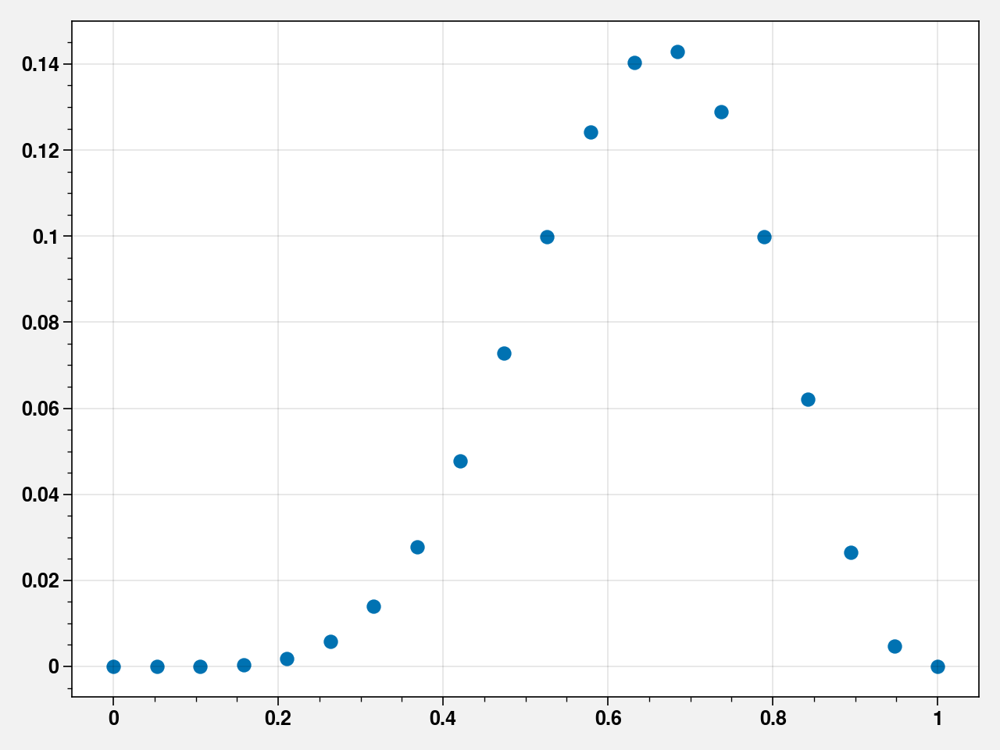
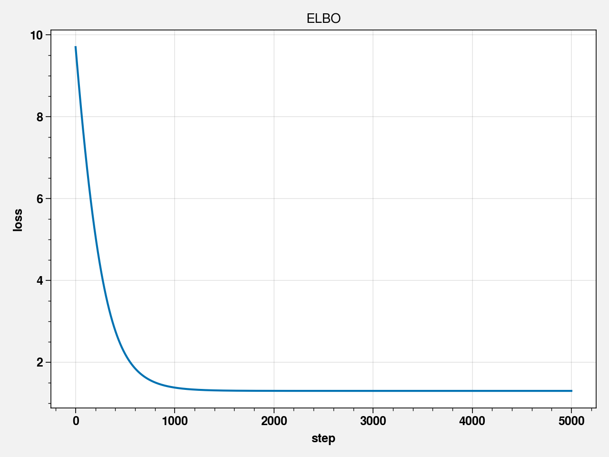
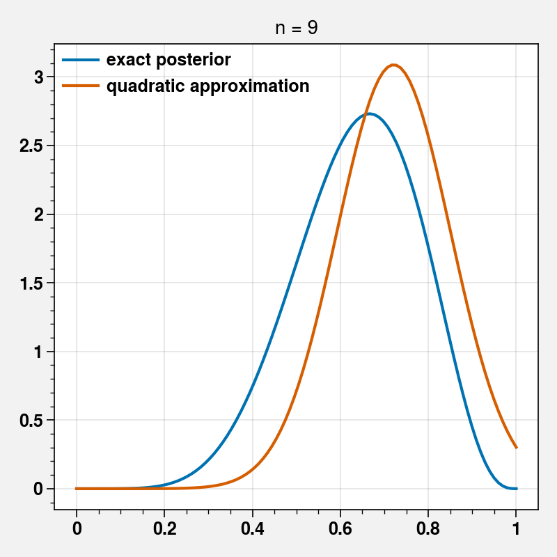
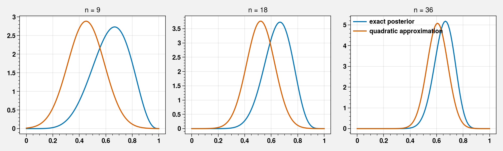

<!DOCTYPE html>

<html xmlns="http://www.w3.org/1999/xhtml">
  <head>
    <meta charset="utf-8" />
    <title>Chapter 02 - Small Worlds and Large Worlds &#8212; Statistical Rethinking in Pyro</title>
    <link rel="stylesheet" href="https://cdnjs.cloudflare.com/ajax/libs/font-awesome/5.11.2/css/all.min.css" integrity="sha384-KA6wR/X5RY4zFAHpv/CnoG2UW1uogYfdnP67Uv7eULvTveboZJg0qUpmJZb5VqzN" crossorigin="anonymous">
    <link href="../_static/css/index.css" rel="stylesheet">
    <link rel="stylesheet" href="../_static/sphinx-book-theme.css" type="text/css" />
    <link rel="stylesheet" href="../_static/pygments.css" type="text/css" />
    <link rel="stylesheet" type="text/css" href="../_static/togglebutton.css" />
    <link rel="stylesheet" type="text/css" href="../_static/copybutton.css" />
    <link rel="stylesheet" type="text/css" href="../_static/mystnb.css" />
    <link rel="stylesheet" type="text/css" href="../_static/jupyter-sphinx.css" />
    <script id="documentation_options" data-url_root="../" src="../_static/documentation_options.js"></script>
    <script src="../_static/sphinx-book-theme.js"></script>
    <script src="../_static/jquery.js"></script>
    <script src="../_static/underscore.js"></script>
    <script src="../_static/doctools.js"></script>
    <script src="../_static/language_data.js"></script>
    <script src="../_static/togglebutton.js"></script>
    <script src="../_static/clipboard.min.js"></script>
    <script src="../_static/copybutton.js"></script>
    <script src="../_static/mystnb.js"></script>
    <script src="../_static/sphinx-book-theme.js"></script>
    <script >var togglebuttonSelector = '.toggle, .admonition.dropdown, .tag_hide_input div.cell_input, .tag_hide-input div.cell_input, .tag_hide_output div.cell_output, .tag_hide-output div.cell_output, .tag_hide_cell.cell, .tag_hide-cell.cell';</script>
    <script src="https://cdnjs.cloudflare.com/ajax/libs/require.js/2.3.4/require.min.js"></script>
    <script src="https://unpkg.com/@jupyter-widgets/html-manager@^0.18.0/dist/embed-amd.js"></script>
    <link rel="index" title="Index" href="../genindex.html" />
    <link rel="search" title="Search" href="../search.html" />
    <link rel="next" title="Chapter 03 - Sampling the Imaginary" href="03_Chapter03.html" />
    <link rel="prev" title="Statistical Rethinking with Pyro" href="../intro.html" />

    <meta name="viewport" content="width=device-width, initial-scale=1">
    <meta name="docsearch:language" content="en">


  </head>
  <body data-spy="scroll" data-target="#bd-toc-nav" data-offset="80">
    

    <div class="container-xl">
      <div class="row">
          
<div class="col-12 col-md-3 bd-sidebar site-navigation show" id="site-navigation">
    
        <div class="navbar-brand-box">
<a class="navbar-brand text-wrap" href="../index.html">
  
  
  <h1 class="site-logo" id="site-title">Statistical Rethinking in Pyro</h1>
  
</a>
</div>

<form class="bd-search d-flex align-items-center" action="../search.html" method="get">
  <i class="icon fas fa-search"></i>
  <input type="search" class="form-control" name="q" id="search-input" placeholder="Search this book..." aria-label="Search this book..." autocomplete="off" >
</form>

<nav class="bd-links" id="bd-docs-nav" aria-label="Main navigation">
  <ul class="nav sidenav_l1">
 <li class="toctree-l1">
  <a class="reference internal" href="../intro.html">
   Statistical Rethinking with Pyro
  </a>
 </li>
</ul>
<ul class="current nav sidenav_l1">
 <li class="toctree-l1 current active">
  <a class="current reference internal" href="#">
   Chapter 02 - Small Worlds and Large Worlds
  </a>
 </li>
 <li class="toctree-l1">
  <a class="reference internal" href="#code-2-1">
   Code 2.1
  </a>
 </li>
 <li class="toctree-l1">
  <a class="reference internal" href="#code-2-2">
   Code 2.2
  </a>
 </li>
 <li class="toctree-l1">
  <a class="reference internal" href="#code-2-3">
   Code 2.3
  </a>
 </li>
 <li class="toctree-l1">
  <a class="reference internal" href="#figure-2-7">
   Figure 2.7
  </a>
 </li>
 <li class="toctree-l1">
  <a class="reference internal" href="#code-2-5">
   Code 2.5
  </a>
 </li>
 <li class="toctree-l1">
  <a class="reference internal" href="#code-2-6">
   Code 2.6
  </a>
 </li>
 <li class="toctree-l1">
  <a class="reference internal" href="#code-2-7">
   Code 2.7
  </a>
 </li>
 <li class="toctree-l1">
  <a class="reference internal" href="03_Chapter03.html">
   Chapter 03 - Sampling the Imaginary
  </a>
 </li>
 <li class="toctree-l1">
  <a class="reference internal" href="03_Chapter03.html#code-3-1">
   Code 3.1
  </a>
 </li>
 <li class="toctree-l1">
  <a class="reference internal" href="03_Chapter03.html#code-3-2">
   Code 3.2
  </a>
 </li>
 <li class="toctree-l1">
  <a class="reference internal" href="03_Chapter03.html#code-3-3">
   Code 3.3
  </a>
 </li>
 <li class="toctree-l1">
  <a class="reference internal" href="03_Chapter03.html#code-3-4-3-5">
   Code 3.4-3.5
  </a>
 </li>
 <li class="toctree-l1">
  <a class="reference internal" href="03_Chapter03.html#code-3-6">
   Code 3.6
  </a>
 </li>
 <li class="toctree-l1">
  <a class="reference internal" href="03_Chapter03.html#code-3-7">
   Code 3.7
  </a>
 </li>
 <li class="toctree-l1">
  <a class="reference internal" href="03_Chapter03.html#code-3-8">
   Code 3.8
  </a>
 </li>
 <li class="toctree-l1">
  <a class="reference internal" href="03_Chapter03.html#code-3-9">
   Code 3.9
  </a>
 </li>
 <li class="toctree-l1">
  <a class="reference internal" href="03_Chapter03.html#code-3-10">
   Code 3.10
  </a>
 </li>
 <li class="toctree-l1">
  <a class="reference internal" href="03_Chapter03.html#code-3-11">
   Code 3.11
  </a>
 </li>
 <li class="toctree-l1">
  <a class="reference internal" href="03_Chapter03.html#code-3-12">
   Code 3.12
  </a>
 </li>
 <li class="toctree-l1">
  <a class="reference internal" href="03_Chapter03.html#code-3-13">
   Code 3.13
  </a>
 </li>
 <li class="toctree-l1">
  <a class="reference internal" href="03_Chapter03.html#code-3-14">
   Code 3.14
  </a>
 </li>
 <li class="toctree-l1">
  <a class="reference internal" href="03_Chapter03.html#code-3-15">
   Code 3.15
  </a>
 </li>
 <li class="toctree-l1">
  <a class="reference internal" href="03_Chapter03.html#code-3-16">
   Code 3.16
  </a>
 </li>
 <li class="toctree-l1">
  <a class="reference internal" href="03_Chapter03.html#code-3-17">
   Code 3.17
  </a>
 </li>
 <li class="toctree-l1">
  <a class="reference internal" href="03_Chapter03.html#code-3-18">
   Code 3.18
  </a>
 </li>
 <li class="toctree-l1">
  <a class="reference internal" href="03_Chapter03.html#code-3-19">
   Code 3.19
  </a>
 </li>
 <li class="toctree-l1">
  <a class="reference internal" href="03_Chapter03.html#code-3-20">
   Code 3.20
  </a>
 </li>
 <li class="toctree-l1">
  <a class="reference internal" href="03_Chapter03.html#code-3-21">
   Code 3.21
  </a>
 </li>
 <li class="toctree-l1">
  <a class="reference internal" href="03_Chapter03.html#code-3-22">
   Code 3.22
  </a>
 </li>
 <li class="toctree-l1">
  <a class="reference internal" href="03_Chapter03.html#code-3-23">
   Code 3.23
  </a>
 </li>
 <li class="toctree-l1">
  <a class="reference internal" href="03_Chapter03.html#code-3-24">
   Code 3.24
  </a>
 </li>
 <li class="toctree-l1">
  <a class="reference internal" href="03_Chapter03.html#code-3-25">
   Code 3.25
  </a>
 </li>
 <li class="toctree-l1">
  <a class="reference internal" href="03_Chapter03.html#code-3-26">
   Code 3.26
  </a>
 </li>
 <li class="toctree-l1">
  <a class="reference internal" href="04_Chapter04.html">
   Chapter 04 - Linear Models
  </a>
 </li>
 <li class="toctree-l1">
  <a class="reference internal" href="04_Chapter04.html#code-4-1">
   Code 4.1
  </a>
 </li>
 <li class="toctree-l1">
  <a class="reference internal" href="04_Chapter04.html#code-4-2">
   Code 4.2
  </a>
 </li>
 <li class="toctree-l1">
  <a class="reference internal" href="04_Chapter04.html#code-4-3">
   Code 4.3
  </a>
 </li>
 <li class="toctree-l1">
  <a class="reference internal" href="04_Chapter04.html#code-4-4">
   Code 4.4
  </a>
 </li>
 <li class="toctree-l1">
  <a class="reference internal" href="04_Chapter04.html#code-4-5">
   Code 4.5
  </a>
 </li>
 <li class="toctree-l1">
  <a class="reference internal" href="04_Chapter04.html#code-4-6">
   Code 4.6
  </a>
 </li>
 <li class="toctree-l1">
  <a class="reference internal" href="04_Chapter04.html#code-4-7">
   Code 4.7
  </a>
 </li>
 <li class="toctree-l1">
  <a class="reference internal" href="04_Chapter04.html#code-4-8">
   Code 4.8
  </a>
 </li>
 <li class="toctree-l1">
  <a class="reference internal" href="04_Chapter04.html#code-4-9">
   Code 4.9
  </a>
 </li>
 <li class="toctree-l1">
  <a class="reference internal" href="04_Chapter04.html#code-4-10">
   Code 4.10
  </a>
 </li>
 <li class="toctree-l1">
  <a class="reference internal" href="04_Chapter04.html#code-4-11">
   Code 4.11
  </a>
 </li>
 <li class="toctree-l1">
  <a class="reference internal" href="04_Chapter04.html#code-4-12">
   Code 4.12
  </a>
 </li>
 <li class="toctree-l1">
  <a class="reference internal" href="04_Chapter04.html#code-4-13">
   Code 4.13
  </a>
 </li>
 <li class="toctree-l1">
  <a class="reference internal" href="04_Chapter04.html#code-4-14">
   Code 4.14
  </a>
 </li>
 <li class="toctree-l1">
  <a class="reference internal" href="04_Chapter04.html#code-4-15">
   Code 4.15
  </a>
 </li>
 <li class="toctree-l1">
  <a class="reference internal" href="04_Chapter04.html#code-4-16">
   Code 4.16
  </a>
 </li>
 <li class="toctree-l1">
  <a class="reference internal" href="04_Chapter04.html#code-4-17">
   Code 4.17
  </a>
 </li>
 <li class="toctree-l1">
  <a class="reference internal" href="04_Chapter04.html#code-4-18">
   Code 4.18
  </a>
 </li>
 <li class="toctree-l1">
  <a class="reference internal" href="04_Chapter04.html#code-4-19">
   Code 4.19
  </a>
 </li>
 <li class="toctree-l1">
  <a class="reference internal" href="04_Chapter04.html#code-4-20">
   Code 4.20
  </a>
 </li>
 <li class="toctree-l1">
  <a class="reference internal" href="04_Chapter04.html#code-4-21">
   Code 4.21
  </a>
 </li>
 <li class="toctree-l1">
  <a class="reference internal" href="04_Chapter04.html#code-4-22">
   Code 4.22
  </a>
 </li>
 <li class="toctree-l1">
  <a class="reference internal" href="04_Chapter04.html#code-4-23">
   Code 4.23
  </a>
 </li>
 <li class="toctree-l1">
  <a class="reference internal" href="04_Chapter04.html#code-4-24">
   Code 4.24
  </a>
 </li>
 <li class="toctree-l1">
  <a class="reference internal" href="04_Chapter04.html#code-4-25">
   Code 4.25
  </a>
 </li>
 <li class="toctree-l1">
  <a class="reference internal" href="04_Chapter04.html#code-4-26">
   Code 4.26
  </a>
 </li>
 <li class="toctree-l1">
  <a class="reference internal" href="04_Chapter04.html#code-4-27">
   Code 4.27
  </a>
 </li>
 <li class="toctree-l1">
  <a class="reference internal" href="04_Chapter04.html#code-4-28">
   Code 4.28
  </a>
 </li>
 <li class="toctree-l1">
  <a class="reference internal" href="04_Chapter04.html#code-4-29">
   Code 4.29
  </a>
 </li>
 <li class="toctree-l1">
  <a class="reference internal" href="04_Chapter04.html#code-4-30">
   Code 4.30
  </a>
 </li>
 <li class="toctree-l1">
  <a class="reference internal" href="04_Chapter04.html#code-4-31">
   Code 4.31
  </a>
 </li>
 <li class="toctree-l1">
  <a class="reference internal" href="04_Chapter04.html#code-4-32">
   Code 4.32
  </a>
 </li>
 <li class="toctree-l1">
  <a class="reference internal" href="04_Chapter04.html#code-4-33">
   Code 4.33
  </a>
 </li>
 <li class="toctree-l1">
  <a class="reference internal" href="04_Chapter04.html#code-4-34">
   Code 4.34
  </a>
 </li>
 <li class="toctree-l1">
  <a class="reference internal" href="04_Chapter04.html#code-4-35">
   Code 4.35
  </a>
 </li>
 <li class="toctree-l1">
  <a class="reference internal" href="04_Chapter04.html#code-4-36">
   Code 4.36
  </a>
 </li>
 <li class="toctree-l1">
  <a class="reference internal" href="04_Chapter04.html#code-4-37">
   Code 4.37
  </a>
 </li>
 <li class="toctree-l1">
  <a class="reference internal" href="04_Chapter04.html#code-4-38">
   Code 4.38
  </a>
 </li>
 <li class="toctree-l1">
  <a class="reference internal" href="04_Chapter04.html#code-4-39">
   Code 4.39
  </a>
 </li>
 <li class="toctree-l1">
  <a class="reference internal" href="04_Chapter04.html#code-4-40">
   Code 4.40
  </a>
 </li>
 <li class="toctree-l1">
  <a class="reference internal" href="04_Chapter04.html#code-4-41">
   Code 4.41
  </a>
 </li>
 <li class="toctree-l1">
  <a class="reference internal" href="04_Chapter04.html#code-4-42">
   Code 4.42
  </a>
 </li>
 <li class="toctree-l1">
  <a class="reference internal" href="04_Chapter04.html#code-4-43">
   Code 4.43
  </a>
 </li>
 <li class="toctree-l1">
  <a class="reference internal" href="04_Chapter04.html#code-4-44">
   Code 4.44
  </a>
 </li>
 <li class="toctree-l1">
  <a class="reference internal" href="04_Chapter04.html#code-4-45">
   Code 4.45
  </a>
 </li>
 <li class="toctree-l1">
  <a class="reference internal" href="04_Chapter04.html#code-4-46">
   Code 4.46
  </a>
 </li>
 <li class="toctree-l1">
  <a class="reference internal" href="04_Chapter04.html#code-4-47">
   Code 4.47
  </a>
 </li>
 <li class="toctree-l1">
  <a class="reference internal" href="04_Chapter04.html#code-4-48">
   Code 4.48
  </a>
 </li>
 <li class="toctree-l1">
  <a class="reference internal" href="04_Chapter04.html#code-4-49">
   Code 4.49
  </a>
 </li>
 <li class="toctree-l1">
  <a class="reference internal" href="04_Chapter04.html#code-4-50">
   Code 4.50
  </a>
 </li>
 <li class="toctree-l1">
  <a class="reference internal" href="04_Chapter04.html#code-4-51">
   Code 4.51
  </a>
 </li>
 <li class="toctree-l1">
  <a class="reference internal" href="04_Chapter04.html#code-4-52">
   Code 4.52
  </a>
 </li>
 <li class="toctree-l1">
  <a class="reference internal" href="04_Chapter04.html#code-4-53">
   Code 4.53
  </a>
 </li>
 <li class="toctree-l1">
  <a class="reference internal" href="04_Chapter04.html#code-4-54">
   Code 4.54
  </a>
 </li>
 <li class="toctree-l1">
  <a class="reference internal" href="04_Chapter04.html#code-4-55">
   Code 4.55
  </a>
 </li>
 <li class="toctree-l1">
  <a class="reference internal" href="04_Chapter04.html#code-4-56">
   Code 4.56
  </a>
 </li>
 <li class="toctree-l1">
  <a class="reference internal" href="04_Chapter04.html#code-4-57">
   Code 4.57
  </a>
 </li>
 <li class="toctree-l1">
  <a class="reference internal" href="04_Chapter04.html#code-4-58">
   Code 4.58
  </a>
 </li>
 <li class="toctree-l1">
  <a class="reference internal" href="04_Chapter04.html#code-4-59">
   Code 4.59
  </a>
 </li>
 <li class="toctree-l1">
  <a class="reference internal" href="04_Chapter04.html#code-4-60">
   Code 4.60
  </a>
 </li>
 <li class="toctree-l1">
  <a class="reference internal" href="04_Chapter04.html#code-4-61">
   Code 4.61
  </a>
 </li>
 <li class="toctree-l1">
  <a class="reference internal" href="04_Chapter04.html#code-4-62">
   Code 4.62
  </a>
 </li>
 <li class="toctree-l1">
  <a class="reference internal" href="04_Chapter04.html#code-4-63">
   Code 4.63
  </a>
 </li>
 <li class="toctree-l1">
  <a class="reference internal" href="04_Chapter04.html#code-4-64">
   Code 4.64
  </a>
 </li>
 <li class="toctree-l1">
  <a class="reference internal" href="04_Chapter04.html#code-4-65">
   Code 4.65
  </a>
 </li>
 <li class="toctree-l1">
  <a class="reference internal" href="04_Chapter04.html#code-4-66">
   Code 4.66
  </a>
 </li>
 <li class="toctree-l1">
  <a class="reference internal" href="04_Chapter04.html#code-4-67">
   Code 4.67
  </a>
 </li>
 <li class="toctree-l1">
  <a class="reference internal" href="04_Chapter04.html#code-4-68">
   Code 4.68
  </a>
 </li>
 <li class="toctree-l1">
  <a class="reference internal" href="04_Chapter04.html#code-4-69">
   Code 4.69
  </a>
 </li>
 <li class="toctree-l1">
  <a class="reference internal" href="04_Chapter04.html#code-4-70">
   Code 4.70
  </a>
 </li>
 <li class="toctree-l1">
  <a class="reference internal" href="04_Chapter04.html#code-4-71">
   Code 4.71
  </a>
 </li>
 <li class="toctree-l1">
  <a class="reference internal" href="04_Chapter04.html#code-4-72">
   Code 4.72
  </a>
 </li>
 <li class="toctree-l1">
  <a class="reference internal" href="05_Chapter05.html">
   Chapter 05 - Multivariate Linear Models
  </a>
 </li>
 <li class="toctree-l1">
  <a class="reference internal" href="05_Chapter05.html#code-5-2">
   Code 5.2
  </a>
 </li>
 <li class="toctree-l1">
  <a class="reference internal" href="05_Chapter05.html#code-5-3">
   Code 5.3
  </a>
 </li>
 <li class="toctree-l1">
  <a class="reference internal" href="05_Chapter05.html#code-5-4">
   Code 5.4
  </a>
 </li>
 <li class="toctree-l1">
  <a class="reference internal" href="05_Chapter05.html#code-5-5">
   Code 5.5
  </a>
 </li>
 <li class="toctree-l1">
  <a class="reference internal" href="05_Chapter05.html#code-5-6">
   Code 5.6
  </a>
 </li>
 <li class="toctree-l1">
  <a class="reference internal" href="05_Chapter05.html#code-5-7">
   Code 5.7
  </a>
 </li>
 <li class="toctree-l1">
  <a class="reference internal" href="05_Chapter05.html#code-5-8">
   Code 5.8
  </a>
 </li>
 <li class="toctree-l1">
  <a class="reference internal" href="05_Chapter05.html#code-5-9">
   Code 5.9
  </a>
 </li>
 <li class="toctree-l1">
  <a class="reference internal" href="05_Chapter05.html#code-5-10">
   Code 5.10
  </a>
 </li>
 <li class="toctree-l1">
  <a class="reference internal" href="05_Chapter05.html#code-5-11">
   Code 5.11
  </a>
 </li>
 <li class="toctree-l1">
  <a class="reference internal" href="05_Chapter05.html#code-5-12">
   Code 5.12
  </a>
 </li>
 <li class="toctree-l1">
  <a class="reference internal" href="05_Chapter05.html#code-5-13">
   Code 5.13
  </a>
 </li>
 <li class="toctree-l1">
  <a class="reference internal" href="05_Chapter05.html#ccode-5-14">
   Ccode 5.14
  </a>
 </li>
 <li class="toctree-l1">
  <a class="reference internal" href="05_Chapter05.html#code-5-15">
   Code 5.15
  </a>
 </li>
 <li class="toctree-l1">
  <a class="reference internal" href="05_Chapter05.html#code-5-16">
   Code 5.16
  </a>
 </li>
 <li class="toctree-l1">
  <a class="reference internal" href="05_Chapter05.html#code-5-17">
   Code 5.17
  </a>
 </li>
 <li class="toctree-l1">
  <a class="reference internal" href="05_Chapter05.html#code-5-18">
   Code 5.18
  </a>
 </li>
 <li class="toctree-l1">
  <a class="reference internal" href="05_Chapter05.html#code-5-19">
   Code 5.19
  </a>
 </li>
 <li class="toctree-l1">
  <a class="reference internal" href="05_Chapter05.html#code-5-20">
   Code 5.20
  </a>
 </li>
 <li class="toctree-l1">
  <a class="reference internal" href="05_Chapter05.html#code-5-21">
   Code 5.21
  </a>
 </li>
 <li class="toctree-l1">
  <a class="reference internal" href="05_Chapter05.html#code-5-22">
   Code 5.22
  </a>
 </li>
 <li class="toctree-l1">
  <a class="reference internal" href="05_Chapter05.html#code-5-23">
   Code 5.23
  </a>
 </li>
 <li class="toctree-l1">
  <a class="reference internal" href="05_Chapter05.html#code-5-24">
   Code 5.24
  </a>
 </li>
 <li class="toctree-l1">
  <a class="reference internal" href="05_Chapter05.html#code-5-25">
   Code 5.25
  </a>
 </li>
 <li class="toctree-l1">
  <a class="reference internal" href="05_Chapter05.html#code-5-26">
   Code 5.26
  </a>
 </li>
 <li class="toctree-l1">
  <a class="reference internal" href="05_Chapter05.html#code-5-27">
   Code 5.27
  </a>
 </li>
 <li class="toctree-l1">
  <a class="reference internal" href="05_Chapter05.html#code-5-28">
   Code 5.28
  </a>
 </li>
 <li class="toctree-l1">
  <a class="reference internal" href="05_Chapter05.html#code-5-29">
   Code 5.29
  </a>
 </li>
 <li class="toctree-l1">
  <a class="reference internal" href="05_Chapter05.html#code-5-30">
   Code 5.30
  </a>
 </li>
 <li class="toctree-l1">
  <a class="reference internal" href="05_Chapter05.html#code-5-34">
   Code 5.34
  </a>
 </li>
 <li class="toctree-l1">
  <a class="reference internal" href="05_Chapter05.html#code-5-35">
   Code 5.35
  </a>
 </li>
 <li class="toctree-l1">
  <a class="reference internal" href="05_Chapter05.html#code-5-36">
   Code 5.36
  </a>
 </li>
 <li class="toctree-l1">
  <a class="reference internal" href="05_Chapter05.html#code-5-37">
   Code 5.37
  </a>
 </li>
 <li class="toctree-l1">
  <a class="reference internal" href="05_Chapter05.html#code-5-38">
   Code 5.38
  </a>
 </li>
 <li class="toctree-l1">
  <a class="reference internal" href="05_Chapter05.html#code-5-39">
   Code 5.39
  </a>
 </li>
 <li class="toctree-l1">
  <a class="reference internal" href="05_Chapter05.html#code-5-40">
   Code 5.40
  </a>
 </li>
 <li class="toctree-l1">
  <a class="reference internal" href="05_Chapter05.html#code-5-41">
   Code 5.41
  </a>
 </li>
 <li class="toctree-l1">
  <a class="reference internal" href="05_Chapter05.html#code-5-42">
   Code 5.42
  </a>
 </li>
 <li class="toctree-l1">
  <a class="reference internal" href="05_Chapter05.html#code-5-43">
   Code 5.43
  </a>
 </li>
 <li class="toctree-l1">
  <a class="reference internal" href="05_Chapter05.html#code-5-44">
   Code 5.44
  </a>
 </li>
 <li class="toctree-l1">
  <a class="reference internal" href="05_Chapter05.html#code-5-45">
   Code 5.45
  </a>
 </li>
 <li class="toctree-l1">
  <a class="reference internal" href="05_Chapter05.html#code-5-46">
   Code 5.46
  </a>
 </li>
 <li class="toctree-l1">
  <a class="reference internal" href="05_Chapter05.html#code-5-47">
   Code 5.47
  </a>
 </li>
 <li class="toctree-l1">
  <a class="reference internal" href="05_Chapter05.html#code-5-48">
   Code 5.48
  </a>
 </li>
 <li class="toctree-l1">
  <a class="reference internal" href="05_Chapter05.html#code-5-49">
   Code 5.49
  </a>
 </li>
 <li class="toctree-l1">
  <a class="reference internal" href="05_Chapter05.html#code-5-50">
   Code 5.50
  </a>
 </li>
 <li class="toctree-l1">
  <a class="reference internal" href="05_Chapter05.html#code-5-51">
   Code 5.51
  </a>
 </li>
 <li class="toctree-l1">
  <a class="reference internal" href="05_Chapter05.html#code-5-52">
   Code 5.52
  </a>
 </li>
 <li class="toctree-l1">
  <a class="reference internal" href="05_Chapter05.html#code-5-53">
   Code 5.53
  </a>
 </li>
 <li class="toctree-l1">
  <a class="reference internal" href="05_Chapter05.html#code-5-54">
   Code 5.54
  </a>
 </li>
 <li class="toctree-l1">
  <a class="reference internal" href="05_Chapter05.html#code-5-55">
   Code 5.55
  </a>
 </li>
 <li class="toctree-l1">
  <a class="reference internal" href="05_Chapter05.html#code-5-56">
   Code 5.56
  </a>
 </li>
 <li class="toctree-l1">
  <a class="reference internal" href="05_Chapter05.html#code-5-57">
   Code 5.57
  </a>
 </li>
 <li class="toctree-l1">
  <a class="reference internal" href="05_Chapter05.html#code-5-58">
   Code 5.58
  </a>
 </li>
 <li class="toctree-l1">
  <a class="reference internal" href="05_Chapter05.html#code-5-59">
   Code 5.59
  </a>
 </li>
 <li class="toctree-l1">
  <a class="reference internal" href="05_Chapter05.html#code-5-60">
   Code 5.60
  </a>
 </li>
 <li class="toctree-l1">
  <a class="reference internal" href="05_Chapter05.html#code-5-61">
   Code 5.61
  </a>
 </li>
 <li class="toctree-l1">
  <a class="reference internal" href="05_Chapter05.html#code-5-62">
   Code 5.62
  </a>
 </li>
 <li class="toctree-l1">
  <a class="reference internal" href="06_Chapter06.html">
   Chapter 06 - Overfitting, Regularization, and Information Criteria
  </a>
 </li>
 <li class="toctree-l1">
  <a class="reference internal" href="06_Chapter06.html#code-6-1">
   Code 6.1
  </a>
 </li>
</ul>

</nav>

 <!-- To handle the deprecated key -->

<div class="navbar_extra_footer">
  Powered by <a href="https://jupyterbook.org">Jupyter Book</a>
</div>

</div>


          


          
<main class="col py-md-3 pl-md-4 bd-content overflow-auto" role="main">
    
    <div class="row topbar fixed-top container-xl">
    <div class="col-12 col-md-3 bd-topbar-whitespace site-navigation show">
    </div>
    <div class="col pl-2 topbar-main">
        
        <button id="navbar-toggler" class="navbar-toggler ml-0" type="button" data-toggle="collapse"
            data-toggle="tooltip" data-placement="bottom" data-target=".site-navigation" aria-controls="navbar-menu"
            aria-expanded="true" aria-label="Toggle navigation" aria-controls="site-navigation"
            title="Toggle navigation" data-toggle="tooltip" data-placement="left">
            <i class="fas fa-bars"></i>
            <i class="fas fa-arrow-left"></i>
            <i class="fas fa-arrow-up"></i>
        </button>
        
        <div class="dropdown-buttons-trigger">
    <button id="dropdown-buttons-trigger" class="btn btn-secondary topbarbtn" aria-label="Download this page"><i
            class="fas fa-download"></i></button>

    
    <div class="dropdown-buttons">
        <!-- ipynb file if we had a myst markdown file -->
        
        <!-- Download raw file -->
        <a class="dropdown-buttons" href="../_sources/Chapters/02_Chapter02.ipynb"><button type="button"
                class="btn btn-secondary topbarbtn" title="Download source file" data-toggle="tooltip"
                data-placement="left">.ipynb</button></a>
        <!-- Download PDF via print -->
        <button type="button" id="download-print" class="btn btn-secondary topbarbtn" title="Print to PDF"
            onClick="window.print()" data-toggle="tooltip" data-placement="left">.pdf</button>
    </div>
    
</div>
        <!-- Source interaction buttons -->


        <!-- Full screen (wrap in <a> to have style consistency -->
        <a class="full-screen-button"><button type="button" class="btn btn-secondary topbarbtn" data-toggle="tooltip"
                data-placement="bottom" onclick="toggleFullScreen()" title="Fullscreen mode"><i
                    class="fas fa-expand"></i></button></a>

        <!-- Launch buttons -->

    </div>

    <!-- Table of contents -->
    <div class="d-none d-md-block col-md-2 bd-toc show">
        <div class="tocsection onthispage pt-5 pb-3">
            <i class="fas fa-list"></i> On this page
        </div>
        <nav id="bd-toc-nav">
            
        </nav>
    </div>
</div>
    <div id="main-content" class="row">
        <div class="col-12 col-md-9 pl-md-3 pr-md-0">
        
              <div>
                
  <p><a href="https://colab.research.google.com/github/saketkc/pyro-rethinking/blob/master/Chapters/02_Chapter02.ipynb" target="_parent"></a></p>
<div class="section" id="chapter-02-small-worlds-and-large-worlds">
<h1>Chapter 02 - Small Worlds and Large Worlds<a class="headerlink" href="#chapter-02-small-worlds-and-large-worlds" title="Permalink to this headline">¶</a></h1>
<div class="cell docutils container">
<div class="cell_input docutils container">
<div class="highlight-default notranslate"><div class="highlight"><pre><span></span>!pip install torch torchvision pyro-ppl proplot black blackcellmagic
</pre></div>
</div>
</div>
<div class="cell_output docutils container">
<div class="output stream highlight-none notranslate"><div class="highlight"><pre><span></span>Requirement already satisfied: torch in /opt/hostedtoolcache/Python/3.7.8/x64/lib/python3.7/site-packages (1.5.0)
</pre></div>
</div>
<div class="output stream highlight-none notranslate"><div class="highlight"><pre><span></span>Collecting torchvision
</pre></div>
</div>
<div class="output stream highlight-none notranslate"><div class="highlight"><pre><span></span>  Downloading torchvision-0.7.0-cp37-cp37m-manylinux1_x86_64.whl (5.9 MB)
[?25l
     |                                | 10 kB 3.2 MB/s eta 0:00:02
     |                                | 20 kB 1.4 MB/s eta 0:00:05
     |▏                               | 30 kB 1.8 MB/s eta 0:00:04
     |▏                               | 40 kB 2.0 MB/s eta 0:00:03
     |▎                               | 51 kB 2.0 MB/s eta 0:00:03
</pre></div>
</div>
<div class="output stream highlight-none notranslate"><div class="highlight"><pre><span></span>
     |▎                               | 61 kB 2.3 MB/s eta 0:00:03
     |▍                               | 71 kB 2.5 MB/s eta 0:00:03
     |▍                               | 81 kB 2.7 MB/s eta 0:00:03
     |▌                               | 92 kB 3.0 MB/s eta 0:00:02
     |▌                               | 102 kB 3.2 MB/s eta 0:00:02
     |▋                               | 112 kB 3.2 MB/s eta 0:00:02
     |▋                               | 122 kB 3.2 MB/s eta 0:00:02
     |▊                               | 133 kB 3.2 MB/s eta 0:00:02
     |▊                               | 143 kB 3.2 MB/s eta 0:00:02
     |▉                               | 153 kB 3.2 MB/s eta 0:00:02
     |▉                               | 163 kB 3.2 MB/s eta 0:00:02
     |█                               | 174 kB 3.2 MB/s eta 0:00:02
     |█                               | 184 kB 3.2 MB/s eta 0:00:02
     |█                               | 194 kB 3.2 MB/s eta 0:00:02
     |█                               | 204 kB 3.2 MB/s eta 0:00:02
     |█▏                              | 215 kB 3.2 MB/s eta 0:00:02
     |█▏                              | 225 kB 3.2 MB/s eta 0:00:02
     |█▎                              | 235 kB 3.2 MB/s eta 0:00:02
     |█▎                              | 245 kB 3.2 MB/s eta 0:00:02
     |█▍                              | 256 kB 3.2 MB/s eta 0:00:02
     |█▍                              | 266 kB 3.2 MB/s eta 0:00:02
     |█▌                              | 276 kB 3.2 MB/s eta 0:00:02
     |█▌                              | 286 kB 3.2 MB/s eta 0:00:02
     |█▋                              | 296 kB 3.2 MB/s eta 0:00:02
     |█▋                              | 307 kB 3.2 MB/s eta 0:00:02
     |█▊                              | 317 kB 3.2 MB/s eta 0:00:02
     |█▊                              | 327 kB 3.2 MB/s eta 0:00:02
     |█▉                              | 337 kB 3.2 MB/s eta 0:00:02
     |█▉                              | 348 kB 3.2 MB/s eta 0:00:02
     |██                              | 358 kB 3.2 MB/s eta 0:00:02
     |██                              | 368 kB 3.2 MB/s eta 0:00:02
     |██                              | 378 kB 3.2 MB/s eta 0:00:02
     |██                              | 389 kB 3.2 MB/s eta 0:00:02
     |██▏                             | 399 kB 3.2 MB/s eta 0:00:02
     |██▏                             | 409 kB 3.2 MB/s eta 0:00:02
     |██▎                             | 419 kB 3.2 MB/s eta 0:00:02
     |██▎                             | 430 kB 3.2 MB/s eta 0:00:02
     |██▍                             | 440 kB 3.2 MB/s eta 0:00:02
     |██▍                             | 450 kB 3.2 MB/s eta 0:00:02
     |██▌                             | 460 kB 3.2 MB/s eta 0:00:02
     |██▌                             | 471 kB 3.2 MB/s eta 0:00:02
     |██▋                             | 481 kB 3.2 MB/s eta 0:00:02
     |██▋                             | 491 kB 3.2 MB/s eta 0:00:02
     |██▊                             | 501 kB 3.2 MB/s eta 0:00:02
     |██▊                             | 512 kB 3.2 MB/s eta 0:00:02
     |██▉                             | 522 kB 3.2 MB/s eta 0:00:02
     |██▉                             | 532 kB 3.2 MB/s eta 0:00:02
     |███                             | 542 kB 3.2 MB/s eta 0:00:02
     |███                             | 552 kB 3.2 MB/s eta 0:00:02
     |███                             | 563 kB 3.2 MB/s eta 0:00:02
     |███                             | 573 kB 3.2 MB/s eta 0:00:02
     |███▏                            | 583 kB 3.2 MB/s eta 0:00:02
     |███▏                            | 593 kB 3.2 MB/s eta 0:00:02
     |███▎                            | 604 kB 3.2 MB/s eta 0:00:02
     |███▎                            | 614 kB 3.2 MB/s eta 0:00:02
     |███▍                            | 624 kB 3.2 MB/s eta 0:00:02
     |███▍                            | 634 kB 3.2 MB/s eta 0:00:02
     |███▌                            | 645 kB 3.2 MB/s eta 0:00:02
     |███▌                            | 655 kB 3.2 MB/s eta 0:00:02
     |███▋                            | 665 kB 3.2 MB/s eta 0:00:02
     |███▋                            | 675 kB 3.2 MB/s eta 0:00:02
     |███▊                            | 686 kB 3.2 MB/s eta 0:00:02
     |███▊                            | 696 kB 3.2 MB/s eta 0:00:02
     |███▉                            | 706 kB 3.2 MB/s eta 0:00:02
     |███▉                            | 716 kB 3.2 MB/s eta 0:00:02
     |████                            | 727 kB 3.2 MB/s eta 0:00:02
     |████                            | 737 kB 3.2 MB/s eta 0:00:02
     |████                            | 747 kB 3.2 MB/s eta 0:00:02
     |████                            | 757 kB 3.2 MB/s eta 0:00:02
     |████▏                           | 768 kB 3.2 MB/s eta 0:00:02
     |████▏                           | 778 kB 3.2 MB/s eta 0:00:02
     |████▎                           | 788 kB 3.2 MB/s eta 0:00:02
     |████▎                           | 798 kB 3.2 MB/s eta 0:00:02
     |████▍                           | 808 kB 3.2 MB/s eta 0:00:02
     |████▍                           | 819 kB 3.2 MB/s eta 0:00:02
     |████▌                           | 829 kB 3.2 MB/s eta 0:00:02
     |████▌                           | 839 kB 3.2 MB/s eta 0:00:02
     |████▋                           | 849 kB 3.2 MB/s eta 0:00:02
     |████▋                           | 860 kB 3.2 MB/s eta 0:00:02
     |████▊                           | 870 kB 3.2 MB/s eta 0:00:02
     |████▊                           | 880 kB 3.2 MB/s eta 0:00:02
     |████▉                           | 890 kB 3.2 MB/s eta 0:00:02
     |████▉                           | 901 kB 3.2 MB/s eta 0:00:02
     |█████                           | 911 kB 3.2 MB/s eta 0:00:02
     |█████                           | 921 kB 3.2 MB/s eta 0:00:02
     |█████                           | 931 kB 3.2 MB/s eta 0:00:02
     |█████                           | 942 kB 3.2 MB/s eta 0:00:02
     |█████▏                          | 952 kB 3.2 MB/s eta 0:00:02
     |█████▏                          | 962 kB 3.2 MB/s eta 0:00:02
     |█████▎                          | 972 kB 3.2 MB/s eta 0:00:02
     |█████▎                          | 983 kB 3.2 MB/s eta 0:00:02
     |█████▍                          | 993 kB 3.2 MB/s eta 0:00:02
     |█████▍                          | 1.0 MB 3.2 MB/s eta 0:00:02
     |█████▌                          | 1.0 MB 3.2 MB/s eta 0:00:02
     |█████▌                          | 1.0 MB 3.2 MB/s eta 0:00:02
     |█████▋                          | 1.0 MB 3.2 MB/s eta 0:00:02
     |█████▋                          | 1.0 MB 3.2 MB/s eta 0:00:02
     |█████▊                          | 1.1 MB 3.2 MB/s eta 0:00:02
     |█████▊                          | 1.1 MB 3.2 MB/s eta 0:00:02
     |█████▉                          | 1.1 MB 3.2 MB/s eta 0:00:02
     |█████▉                          | 1.1 MB 3.2 MB/s eta 0:00:02
     |██████                          | 1.1 MB 3.2 MB/s eta 0:00:02
     |██████                          | 1.1 MB 3.2 MB/s eta 0:00:02
     |██████                          | 1.1 MB 3.2 MB/s eta 0:00:02
     |██████                          | 1.1 MB 3.2 MB/s eta 0:00:02
     |██████▏                         | 1.1 MB 3.2 MB/s eta 0:00:02
     |██████▏                         | 1.1 MB 3.2 MB/s eta 0:00:02
     |██████▎                         | 1.2 MB 3.2 MB/s eta 0:00:02
     |██████▎                         | 1.2 MB 3.2 MB/s eta 0:00:02
     |██████▍                         | 1.2 MB 3.2 MB/s eta 0:00:02
     |██████▍                         | 1.2 MB 3.2 MB/s eta 0:00:02
     |██████▌                         | 1.2 MB 3.2 MB/s eta 0:00:02
     |██████▌                         | 1.2 MB 3.2 MB/s eta 0:00:02
     |██████▋                         | 1.2 MB 3.2 MB/s eta 0:00:02
     |██████▋                         | 1.2 MB 3.2 MB/s eta 0:00:02
     |██████▊                         | 1.2 MB 3.2 MB/s eta 0:00:02
     |██████▊                         | 1.2 MB 3.2 MB/s eta 0:00:02
     |██████▉                         | 1.3 MB 3.2 MB/s eta 0:00:02
     |██████▉                         | 1.3 MB 3.2 MB/s eta 0:00:02
     |███████                         | 1.3 MB 3.2 MB/s eta 0:00:02
     |███████                         | 1.3 MB 3.2 MB/s eta 0:00:02
     |███████                         | 1.3 MB 3.2 MB/s eta 0:00:02
     |███████                         | 1.3 MB 3.2 MB/s eta 0:00:02
     |███████▏                        | 1.3 MB 3.2 MB/s eta 0:00:02
     |███████▏                        | 1.3 MB 3.2 MB/s eta 0:00:02
     |███████▎                        | 1.3 MB 3.2 MB/s eta 0:00:02
     |███████▎                        | 1.4 MB 3.2 MB/s eta 0:00:02
     |███████▍                        | 1.4 MB 3.2 MB/s eta 0:00:02
     |███████▍                        | 1.4 MB 3.2 MB/s eta 0:00:02
     |███████▌                        | 1.4 MB 3.2 MB/s eta 0:00:02
     |███████▌                        | 1.4 MB 3.2 MB/s eta 0:00:02
     |███████▋                        | 1.4 MB 3.2 MB/s eta 0:00:02
     |███████▋                        | 1.4 MB 3.2 MB/s eta 0:00:02
     |███████▊                        | 1.4 MB 3.2 MB/s eta 0:00:02
     |███████▊                        | 1.4 MB 3.2 MB/s eta 0:00:02
     |███████▉                        | 1.4 MB 3.2 MB/s eta 0:00:02
     |███████▉                        | 1.5 MB 3.2 MB/s eta 0:00:02
     |████████                        | 1.5 MB 3.2 MB/s eta 0:00:02
     |████████                        | 1.5 MB 3.2 MB/s eta 0:00:02
     |████████                        | 1.5 MB 3.2 MB/s eta 0:00:02
     |████████                        | 1.5 MB 3.2 MB/s eta 0:00:02
</pre></div>
</div>
<div class="output stream highlight-none notranslate"><div class="highlight"><pre><span></span>
     |████████▏                       | 1.5 MB 3.2 MB/s eta 0:00:02
     |████████▏                       | 1.5 MB 3.2 MB/s eta 0:00:02
     |████████▎                       | 1.5 MB 3.2 MB/s eta 0:00:02
     |████████▎                       | 1.5 MB 3.2 MB/s eta 0:00:02
     |████████▍                       | 1.5 MB 3.2 MB/s eta 0:00:02
     |████████▍                       | 1.6 MB 3.2 MB/s eta 0:00:02
     |████████▌                       | 1.6 MB 3.2 MB/s eta 0:00:02
     |████████▌                       | 1.6 MB 3.2 MB/s eta 0:00:02
     |████████▋                       | 1.6 MB 3.2 MB/s eta 0:00:02
     |████████▋                       | 1.6 MB 3.2 MB/s eta 0:00:02
     |████████▊                       | 1.6 MB 3.2 MB/s eta 0:00:02
     |████████▊                       | 1.6 MB 3.2 MB/s eta 0:00:02
     |████████▉                       | 1.6 MB 3.2 MB/s eta 0:00:02
     |████████▉                       | 1.6 MB 3.2 MB/s eta 0:00:02
     |█████████                       | 1.6 MB 3.2 MB/s eta 0:00:02
     |█████████                       | 1.7 MB 3.2 MB/s eta 0:00:02
     |█████████                       | 1.7 MB 3.2 MB/s eta 0:00:02
     |█████████                       | 1.7 MB 3.2 MB/s eta 0:00:02
     |█████████▏                      | 1.7 MB 3.2 MB/s eta 0:00:02
     |█████████▏                      | 1.7 MB 3.2 MB/s eta 0:00:02
     |█████████▎                      | 1.7 MB 3.2 MB/s eta 0:00:02
     |█████████▎                      | 1.7 MB 3.2 MB/s eta 0:00:02
     |█████████▍                      | 1.7 MB 3.2 MB/s eta 0:00:02
     |█████████▍                      | 1.7 MB 3.2 MB/s eta 0:00:02
     |█████████▌                      | 1.8 MB 3.2 MB/s eta 0:00:02
     |█████████▌                      | 1.8 MB 3.2 MB/s eta 0:00:02
     |█████████▋                      | 1.8 MB 3.2 MB/s eta 0:00:02
     |█████████▋                      | 1.8 MB 3.2 MB/s eta 0:00:02
     |█████████▊                      | 1.8 MB 3.2 MB/s eta 0:00:02
     |█████████▊                      | 1.8 MB 3.2 MB/s eta 0:00:02
     |█████████▉                      | 1.8 MB 3.2 MB/s eta 0:00:02
     |█████████▉                      | 1.8 MB 3.2 MB/s eta 0:00:02
     |██████████                      | 1.8 MB 3.2 MB/s eta 0:00:02
     |██████████                      | 1.8 MB 3.2 MB/s eta 0:00:02
     |██████████                      | 1.9 MB 3.2 MB/s eta 0:00:02
     |██████████                      | 1.9 MB 3.2 MB/s eta 0:00:02
     |██████████▏                     | 1.9 MB 3.2 MB/s eta 0:00:02
     |██████████▏                     | 1.9 MB 3.2 MB/s eta 0:00:02
     |██████████▎                     | 1.9 MB 3.2 MB/s eta 0:00:02
     |██████████▎                     | 1.9 MB 3.2 MB/s eta 0:00:02
     |██████████▍                     | 1.9 MB 3.2 MB/s eta 0:00:02
     |██████████▍                     | 1.9 MB 3.2 MB/s eta 0:00:02
     |██████████▌                     | 1.9 MB 3.2 MB/s eta 0:00:02
     |██████████▌                     | 1.9 MB 3.2 MB/s eta 0:00:02
     |██████████▋                     | 2.0 MB 3.2 MB/s eta 0:00:02
     |██████████▋                     | 2.0 MB 3.2 MB/s eta 0:00:02
     |██████████▊                     | 2.0 MB 3.2 MB/s eta 0:00:02
     |██████████▊                     | 2.0 MB 3.2 MB/s eta 0:00:02
     |██████████▉                     | 2.0 MB 3.2 MB/s eta 0:00:02
     |██████████▉                     | 2.0 MB 3.2 MB/s eta 0:00:02
     |███████████                     | 2.0 MB 3.2 MB/s eta 0:00:02
     |███████████                     | 2.0 MB 3.2 MB/s eta 0:00:02
     |███████████                     | 2.0 MB 3.2 MB/s eta 0:00:02
     |███████████                     | 2.0 MB 3.2 MB/s eta 0:00:02
     |███████████▏                    | 2.1 MB 3.2 MB/s eta 0:00:02
     |███████████▏                    | 2.1 MB 3.2 MB/s eta 0:00:02
     |███████████▎                    | 2.1 MB 3.2 MB/s eta 0:00:02
     |███████████▎                    | 2.1 MB 3.2 MB/s eta 0:00:02
     |███████████▍                    | 2.1 MB 3.2 MB/s eta 0:00:02
     |███████████▍                    | 2.1 MB 3.2 MB/s eta 0:00:02
     |███████████▌                    | 2.1 MB 3.2 MB/s eta 0:00:02
     |███████████▌                    | 2.1 MB 3.2 MB/s eta 0:00:02
     |███████████▋                    | 2.1 MB 3.2 MB/s eta 0:00:02
     |███████████▋                    | 2.2 MB 3.2 MB/s eta 0:00:02
     |███████████▊                    | 2.2 MB 3.2 MB/s eta 0:00:02
     |███████████▊                    | 2.2 MB 3.2 MB/s eta 0:00:02
     |███████████▉                    | 2.2 MB 3.2 MB/s eta 0:00:02
     |███████████▉                    | 2.2 MB 3.2 MB/s eta 0:00:02
     |████████████                    | 2.2 MB 3.2 MB/s eta 0:00:02
     |████████████                    | 2.2 MB 3.2 MB/s eta 0:00:02
     |████████████                    | 2.2 MB 3.2 MB/s eta 0:00:02
     |████████████                    | 2.2 MB 3.2 MB/s eta 0:00:02
     |████████████▏                   | 2.2 MB 3.2 MB/s eta 0:00:02
     |████████████▏                   | 2.3 MB 3.2 MB/s eta 0:00:02
     |████████████▎                   | 2.3 MB 3.2 MB/s eta 0:00:02
     |████████████▎                   | 2.3 MB 3.2 MB/s eta 0:00:02
     |████████████▍                   | 2.3 MB 3.2 MB/s eta 0:00:02
     |████████████▍                   | 2.3 MB 3.2 MB/s eta 0:00:02
     |████████████▌                   | 2.3 MB 3.2 MB/s eta 0:00:02
     |████████████▌                   | 2.3 MB 3.2 MB/s eta 0:00:02
     |████████████▋                   | 2.3 MB 3.2 MB/s eta 0:00:02
     |████████████▋                   | 2.3 MB 3.2 MB/s eta 0:00:02
     |████████████▊                   | 2.3 MB 3.2 MB/s eta 0:00:02
     |████████████▊                   | 2.4 MB 3.2 MB/s eta 0:00:02
     |████████████▉                   | 2.4 MB 3.2 MB/s eta 0:00:02
     |████████████▉                   | 2.4 MB 3.2 MB/s eta 0:00:02
     |█████████████                   | 2.4 MB 3.2 MB/s eta 0:00:02
     |█████████████                   | 2.4 MB 3.2 MB/s eta 0:00:02
     |█████████████                   | 2.4 MB 3.2 MB/s eta 0:00:02
     |█████████████                   | 2.4 MB 3.2 MB/s eta 0:00:02
     |█████████████▏                  | 2.4 MB 3.2 MB/s eta 0:00:02
     |█████████████▏                  | 2.4 MB 3.2 MB/s eta 0:00:02
     |█████████████▎                  | 2.4 MB 3.2 MB/s eta 0:00:02
     |█████████████▎                  | 2.5 MB 3.2 MB/s eta 0:00:02
     |█████████████▍                  | 2.5 MB 3.2 MB/s eta 0:00:02
     |█████████████▍                  | 2.5 MB 3.2 MB/s eta 0:00:02
     |█████████████▌                  | 2.5 MB 3.2 MB/s eta 0:00:02
     |█████████████▌                  | 2.5 MB 3.2 MB/s eta 0:00:02
     |█████████████▋                  | 2.5 MB 3.2 MB/s eta 0:00:02
     |█████████████▋                  | 2.5 MB 3.2 MB/s eta 0:00:02
     |█████████████▊                  | 2.5 MB 3.2 MB/s eta 0:00:02
     |█████████████▊                  | 2.5 MB 3.2 MB/s eta 0:00:02
     |█████████████▉                  | 2.5 MB 3.2 MB/s eta 0:00:02
     |█████████████▉                  | 2.6 MB 3.2 MB/s eta 0:00:02
     |██████████████                  | 2.6 MB 3.2 MB/s eta 0:00:02
     |██████████████                  | 2.6 MB 3.2 MB/s eta 0:00:02
     |██████████████                  | 2.6 MB 3.2 MB/s eta 0:00:02
     |██████████████                  | 2.6 MB 3.2 MB/s eta 0:00:02
     |██████████████▏                 | 2.6 MB 3.2 MB/s eta 0:00:02
     |██████████████▏                 | 2.6 MB 3.2 MB/s eta 0:00:02
     |██████████████▎                 | 2.6 MB 3.2 MB/s eta 0:00:02
     |██████████████▎                 | 2.6 MB 3.2 MB/s eta 0:00:02
     |██████████████▍                 | 2.7 MB 3.2 MB/s eta 0:00:02
     |██████████████▍                 | 2.7 MB 3.2 MB/s eta 0:00:02
     |██████████████▌                 | 2.7 MB 3.2 MB/s eta 0:00:02
     |██████████████▌                 | 2.7 MB 3.2 MB/s eta 0:00:02
     |██████████████▋                 | 2.7 MB 3.2 MB/s eta 0:00:02
     |██████████████▋                 | 2.7 MB 3.2 MB/s eta 0:00:02
     |██████████████▊                 | 2.7 MB 3.2 MB/s eta 0:00:02
     |██████████████▊                 | 2.7 MB 3.2 MB/s eta 0:00:02
     |██████████████▉                 | 2.7 MB 3.2 MB/s eta 0:00:02
     |██████████████▉                 | 2.7 MB 3.2 MB/s eta 0:00:01
     |███████████████                 | 2.8 MB 3.2 MB/s eta 0:00:01
     |███████████████                 | 2.8 MB 3.2 MB/s eta 0:00:01
     |███████████████                 | 2.8 MB 3.2 MB/s eta 0:00:01
     |███████████████                 | 2.8 MB 3.2 MB/s eta 0:00:01
     |███████████████▏                | 2.8 MB 3.2 MB/s eta 0:00:01
     |███████████████▏                | 2.8 MB 3.2 MB/s eta 0:00:01
     |███████████████▎                | 2.8 MB 3.2 MB/s eta 0:00:01
     |███████████████▎                | 2.8 MB 3.2 MB/s eta 0:00:01
     |███████████████▍                | 2.8 MB 3.2 MB/s eta 0:00:01
     |███████████████▍                | 2.8 MB 3.2 MB/s eta 0:00:01
     |███████████████▌                | 2.9 MB 3.2 MB/s eta 0:00:01
     |███████████████▌                | 2.9 MB 3.2 MB/s eta 0:00:01
     |███████████████▋                | 2.9 MB 3.2 MB/s eta 0:00:01
     |███████████████▋                | 2.9 MB 3.2 MB/s eta 0:00:01
     |███████████████▊                | 2.9 MB 3.2 MB/s eta 0:00:01
     |███████████████▊                | 2.9 MB 3.2 MB/s eta 0:00:01
     |███████████████▉                | 2.9 MB 3.2 MB/s eta 0:00:01
     |███████████████▉                | 2.9 MB 3.2 MB/s eta 0:00:01
     |████████████████                | 2.9 MB 3.2 MB/s eta 0:00:01
     |████████████████                | 2.9 MB 3.2 MB/s eta 0:00:01
     |████████████████                | 3.0 MB 3.2 MB/s eta 0:00:01
     |████████████████                | 3.0 MB 3.2 MB/s eta 0:00:01
     |████████████████▏               | 3.0 MB 3.2 MB/s eta 0:00:01
     |████████████████▏               | 3.0 MB 3.2 MB/s eta 0:00:01
     |████████████████▎               | 3.0 MB 3.2 MB/s eta 0:00:01
     |████████████████▎               | 3.0 MB 3.2 MB/s eta 0:00:01
     |████████████████▍               | 3.0 MB 3.2 MB/s eta 0:00:01
     |████████████████▍               | 3.0 MB 3.2 MB/s eta 0:00:01
     |████████████████▌               | 3.0 MB 3.2 MB/s eta 0:00:01
     |████████████████▌               | 3.1 MB 3.2 MB/s eta 0:00:01
     |████████████████▋               | 3.1 MB 3.2 MB/s eta 0:00:01
     |████████████████▋               | 3.1 MB 3.2 MB/s eta 0:00:01
     |████████████████▊               | 3.1 MB 3.2 MB/s eta 0:00:01
     |████████████████▊               | 3.1 MB 3.2 MB/s eta 0:00:01
     |████████████████▉               | 3.1 MB 3.2 MB/s eta 0:00:01
     |████████████████▉               | 3.1 MB 3.2 MB/s eta 0:00:01
     |█████████████████               | 3.1 MB 3.2 MB/s eta 0:00:01
     |█████████████████               | 3.1 MB 3.2 MB/s eta 0:00:01
     |█████████████████               | 3.1 MB 3.2 MB/s eta 0:00:01
     |█████████████████               | 3.2 MB 3.2 MB/s eta 0:00:01
     |█████████████████               | 3.2 MB 3.2 MB/s eta 0:00:01
     |█████████████████▏              | 3.2 MB 3.2 MB/s eta 0:00:01
     |█████████████████▏              | 3.2 MB 3.2 MB/s eta 0:00:01
     |█████████████████▎              | 3.2 MB 3.2 MB/s eta 0:00:01
     |█████████████████▎              | 3.2 MB 3.2 MB/s eta 0:00:01
     |█████████████████▍              | 3.2 MB 3.2 MB/s eta 0:00:01
     |█████████████████▍              | 3.2 MB 3.2 MB/s eta 0:00:01
     |█████████████████▌              | 3.2 MB 3.2 MB/s eta 0:00:01
     |█████████████████▌              | 3.2 MB 3.2 MB/s eta 0:00:01
     |█████████████████▋              | 3.3 MB 3.2 MB/s eta 0:00:01
     |█████████████████▋              | 3.3 MB 3.2 MB/s eta 0:00:01
     |█████████████████▊              | 3.3 MB 3.2 MB/s eta 0:00:01
     |█████████████████▊              | 3.3 MB 3.2 MB/s eta 0:00:01
     |█████████████████▉              | 3.3 MB 3.2 MB/s eta 0:00:01
     |█████████████████▉              | 3.3 MB 3.2 MB/s eta 0:00:01
     |██████████████████              | 3.3 MB 3.2 MB/s eta 0:00:01
     |██████████████████              | 3.3 MB 3.2 MB/s eta 0:00:01
     |██████████████████              | 3.3 MB 3.2 MB/s eta 0:00:01
     |██████████████████              | 3.3 MB 3.2 MB/s eta 0:00:01
     |██████████████████▏             | 3.4 MB 3.2 MB/s eta 0:00:01
     |██████████████████▏             | 3.4 MB 3.2 MB/s eta 0:00:01
     |██████████████████▎             | 3.4 MB 3.2 MB/s eta 0:00:01
     |██████████████████▎             | 3.4 MB 3.2 MB/s eta 0:00:01
     |██████████████████▍             | 3.4 MB 3.2 MB/s eta 0:00:01
     |██████████████████▍             | 3.4 MB 3.2 MB/s eta 0:00:01
     |██████████████████▌             | 3.4 MB 3.2 MB/s eta 0:00:01
     |██████████████████▌             | 3.4 MB 3.2 MB/s eta 0:00:01
     |██████████████████▋             | 3.4 MB 3.2 MB/s eta 0:00:01
     |██████████████████▋             | 3.5 MB 3.2 MB/s eta 0:00:01
     |██████████████████▊             | 3.5 MB 3.2 MB/s eta 0:00:01
     |██████████████████▊             | 3.5 MB 3.2 MB/s eta 0:00:01
     |██████████████████▉             | 3.5 MB 3.2 MB/s eta 0:00:01
     |██████████████████▉             | 3.5 MB 3.2 MB/s eta 0:00:01
     |███████████████████             | 3.5 MB 3.2 MB/s eta 0:00:01
     |███████████████████             | 3.5 MB 3.2 MB/s eta 0:00:01
     |███████████████████             | 3.5 MB 3.2 MB/s eta 0:00:01
     |███████████████████             | 3.5 MB 3.2 MB/s eta 0:00:01
     |███████████████████▏            | 3.5 MB 3.2 MB/s eta 0:00:01
     |███████████████████▏            | 3.6 MB 3.2 MB/s eta 0:00:01
     |███████████████████▎            | 3.6 MB 3.2 MB/s eta 0:00:01
     |███████████████████▎            | 3.6 MB 3.2 MB/s eta 0:00:01
     |███████████████████▍            | 3.6 MB 3.2 MB/s eta 0:00:01
     |███████████████████▍            | 3.6 MB 3.2 MB/s eta 0:00:01
     |███████████████████▌            | 3.6 MB 3.2 MB/s eta 0:00:01
     |███████████████████▌            | 3.6 MB 3.2 MB/s eta 0:00:01
     |███████████████████▋            | 3.6 MB 3.2 MB/s eta 0:00:01
     |███████████████████▋            | 3.6 MB 3.2 MB/s eta 0:00:01
     |███████████████████▊            | 3.6 MB 3.2 MB/s eta 0:00:01
     |███████████████████▊            | 3.7 MB 3.2 MB/s eta 0:00:01
     |███████████████████▉            | 3.7 MB 3.2 MB/s eta 0:00:01
     |███████████████████▉            | 3.7 MB 3.2 MB/s eta 0:00:01
     |████████████████████            | 3.7 MB 3.2 MB/s eta 0:00:01
     |████████████████████            | 3.7 MB 3.2 MB/s eta 0:00:01
     |████████████████████            | 3.7 MB 3.2 MB/s eta 0:00:01
     |████████████████████            | 3.7 MB 3.2 MB/s eta 0:00:01
     |████████████████████▏           | 3.7 MB 3.2 MB/s eta 0:00:01
     |████████████████████▏           | 3.7 MB 3.2 MB/s eta 0:00:01
     |████████████████████▎           | 3.7 MB 3.2 MB/s eta 0:00:01
     |████████████████████▎           | 3.8 MB 3.2 MB/s eta 0:00:01
     |████████████████████▍           | 3.8 MB 3.2 MB/s eta 0:00:01
     |████████████████████▍           | 3.8 MB 3.2 MB/s eta 0:00:01
     |████████████████████▌           | 3.8 MB 3.2 MB/s eta 0:00:01
     |████████████████████▌           | 3.8 MB 3.2 MB/s eta 0:00:01
     |████████████████████▋           | 3.8 MB 3.2 MB/s eta 0:00:01
     |████████████████████▋           | 3.8 MB 3.2 MB/s eta 0:00:01
     |████████████████████▊           | 3.8 MB 3.2 MB/s eta 0:00:01
     |████████████████████▊           | 3.8 MB 3.2 MB/s eta 0:00:01
     |████████████████████▉           | 3.9 MB 3.2 MB/s eta 0:00:01
     |████████████████████▉           | 3.9 MB 3.2 MB/s eta 0:00:01
     |█████████████████████           | 3.9 MB 3.2 MB/s eta 0:00:01
     |█████████████████████           | 3.9 MB 3.2 MB/s eta 0:00:01
     |█████████████████████           | 3.9 MB 3.2 MB/s eta 0:00:01
     |█████████████████████           | 3.9 MB 3.2 MB/s eta 0:00:01
     |█████████████████████▏          | 3.9 MB 3.2 MB/s eta 0:00:01
     |█████████████████████▏          | 3.9 MB 3.2 MB/s eta 0:00:01
     |█████████████████████▎          | 3.9 MB 3.2 MB/s eta 0:00:01
     |█████████████████████▎          | 3.9 MB 3.2 MB/s eta 0:00:01
     |█████████████████████▍          | 4.0 MB 3.2 MB/s eta 0:00:01
     |█████████████████████▍          | 4.0 MB 3.2 MB/s eta 0:00:01
     |█████████████████████▌          | 4.0 MB 3.2 MB/s eta 0:00:01
     |█████████████████████▌          | 4.0 MB 3.2 MB/s eta 0:00:01
     |█████████████████████▋          | 4.0 MB 3.2 MB/s eta 0:00:01
     |█████████████████████▋          | 4.0 MB 3.2 MB/s eta 0:00:01
     |█████████████████████▊          | 4.0 MB 3.2 MB/s eta 0:00:01
     |█████████████████████▊          | 4.0 MB 3.2 MB/s eta 0:00:01
     |█████████████████████▉          | 4.0 MB 3.2 MB/s eta 0:00:01
     |█████████████████████▉          | 4.0 MB 3.2 MB/s eta 0:00:01
     |██████████████████████          | 4.1 MB 3.2 MB/s eta 0:00:01
     |██████████████████████          | 4.1 MB 3.2 MB/s eta 0:00:01
     |██████████████████████          | 4.1 MB 3.2 MB/s eta 0:00:01
     |██████████████████████          | 4.1 MB 3.2 MB/s eta 0:00:01
     |██████████████████████▏         | 4.1 MB 3.2 MB/s eta 0:00:01
     |██████████████████████▏         | 4.1 MB 3.2 MB/s eta 0:00:01
     |██████████████████████▎         | 4.1 MB 3.2 MB/s eta 0:00:01
     |██████████████████████▎         | 4.1 MB 3.2 MB/s eta 0:00:01
     |██████████████████████▍         | 4.1 MB 3.2 MB/s eta 0:00:01
     |██████████████████████▍         | 4.1 MB 3.2 MB/s eta 0:00:01
     |██████████████████████▌         | 4.2 MB 3.2 MB/s eta 0:00:01
     |██████████████████████▌         | 4.2 MB 3.2 MB/s eta 0:00:01
     |██████████████████████▋         | 4.2 MB 3.2 MB/s eta 0:00:01
     |██████████████████████▋         | 4.2 MB 3.2 MB/s eta 0:00:01
     |██████████████████████▊         | 4.2 MB 3.2 MB/s eta 0:00:01
     |██████████████████████▊         | 4.2 MB 3.2 MB/s eta 0:00:01
     |██████████████████████▉         | 4.2 MB 3.2 MB/s eta 0:00:01
     |██████████████████████▉         | 4.2 MB 3.2 MB/s eta 0:00:01
     |███████████████████████         | 4.2 MB 3.2 MB/s eta 0:00:01
     |███████████████████████         | 4.2 MB 3.2 MB/s eta 0:00:01
     |███████████████████████         | 4.3 MB 3.2 MB/s eta 0:00:01
     |███████████████████████         | 4.3 MB 3.2 MB/s eta 0:00:01
     |███████████████████████▏        | 4.3 MB 3.2 MB/s eta 0:00:01
     |███████████████████████▏        | 4.3 MB 3.2 MB/s eta 0:00:01
     |███████████████████████▎        | 4.3 MB 3.2 MB/s eta 0:00:01
     |███████████████████████▎        | 4.3 MB 3.2 MB/s eta 0:00:01
     |███████████████████████▍        | 4.3 MB 3.2 MB/s eta 0:00:01
     |███████████████████████▍        | 4.3 MB 3.2 MB/s eta 0:00:01
     |███████████████████████▌        | 4.3 MB 3.2 MB/s eta 0:00:01
     |███████████████████████▌        | 4.4 MB 3.2 MB/s eta 0:00:01
     |███████████████████████▋        | 4.4 MB 3.2 MB/s eta 0:00:01
     |███████████████████████▋        | 4.4 MB 3.2 MB/s eta 0:00:01
     |███████████████████████▊        | 4.4 MB 3.2 MB/s eta 0:00:01
     |███████████████████████▊        | 4.4 MB 3.2 MB/s eta 0:00:01
     |███████████████████████▉        | 4.4 MB 3.2 MB/s eta 0:00:01
     |███████████████████████▉        | 4.4 MB 3.2 MB/s eta 0:00:01
     |████████████████████████        | 4.4 MB 3.2 MB/s eta 0:00:01
     |████████████████████████        | 4.4 MB 3.2 MB/s eta 0:00:01
     |████████████████████████        | 4.4 MB 3.2 MB/s eta 0:00:01
     |████████████████████████        | 4.5 MB 3.2 MB/s eta 0:00:01
     |████████████████████████▏       | 4.5 MB 3.2 MB/s eta 0:00:01
     |████████████████████████▏       | 4.5 MB 3.2 MB/s eta 0:00:01
     |████████████████████████▎       | 4.5 MB 3.2 MB/s eta 0:00:01
     |████████████████████████▎       | 4.5 MB 3.2 MB/s eta 0:00:01
     |████████████████████████▍       | 4.5 MB 3.2 MB/s eta 0:00:01
     |████████████████████████▍       | 4.5 MB 3.2 MB/s eta 0:00:01
     |████████████████████████▌       | 4.5 MB 3.2 MB/s eta 0:00:01
     |████████████████████████▌       | 4.5 MB 3.2 MB/s eta 0:00:01
     |████████████████████████▋       | 4.5 MB 3.2 MB/s eta 0:00:01
     |████████████████████████▋       | 4.6 MB 3.2 MB/s eta 0:00:01
     |████████████████████████▊       | 4.6 MB 3.2 MB/s eta 0:00:01
     |████████████████████████▊       | 4.6 MB 3.2 MB/s eta 0:00:01
     |████████████████████████▉       | 4.6 MB 3.2 MB/s eta 0:00:01
     |████████████████████████▉       | 4.6 MB 3.2 MB/s eta 0:00:01
     |█████████████████████████       | 4.6 MB 3.2 MB/s eta 0:00:01
     |█████████████████████████       | 4.6 MB 3.2 MB/s eta 0:00:01
     |█████████████████████████       | 4.6 MB 3.2 MB/s eta 0:00:01
     |█████████████████████████       | 4.6 MB 3.2 MB/s eta 0:00:01
     |█████████████████████████▏      | 4.6 MB 3.2 MB/s eta 0:00:01
     |█████████████████████████▏      | 4.7 MB 3.2 MB/s eta 0:00:01
     |█████████████████████████▎      | 4.7 MB 3.2 MB/s eta 0:00:01
     |█████████████████████████▎      | 4.7 MB 3.2 MB/s eta 0:00:01
     |█████████████████████████▍      | 4.7 MB 3.2 MB/s eta 0:00:01
     |█████████████████████████▍      | 4.7 MB 3.2 MB/s eta 0:00:01
     |█████████████████████████▌      | 4.7 MB 3.2 MB/s eta 0:00:01
     |█████████████████████████▌      | 4.7 MB 3.2 MB/s eta 0:00:01
     |█████████████████████████▋      | 4.7 MB 3.2 MB/s eta 0:00:01
     |█████████████████████████▋      | 4.7 MB 3.2 MB/s eta 0:00:01
     |█████████████████████████▊      | 4.8 MB 3.2 MB/s eta 0:00:01
     |█████████████████████████▊      | 4.8 MB 3.2 MB/s eta 0:00:01
     |█████████████████████████▉      | 4.8 MB 3.2 MB/s eta 0:00:01
     |█████████████████████████▉      | 4.8 MB 3.2 MB/s eta 0:00:01
     |██████████████████████████      | 4.8 MB 3.2 MB/s eta 0:00:01
     |██████████████████████████      | 4.8 MB 3.2 MB/s eta 0:00:01
     |██████████████████████████      | 4.8 MB 3.2 MB/s eta 0:00:01
     |██████████████████████████      | 4.8 MB 3.2 MB/s eta 0:00:01
     |██████████████████████████▏     | 4.8 MB 3.2 MB/s eta 0:00:01
     |██████████████████████████▏     | 4.8 MB 3.2 MB/s eta 0:00:01
     |██████████████████████████▎     | 4.9 MB 3.2 MB/s eta 0:00:01
     |██████████████████████████▎     | 4.9 MB 3.2 MB/s eta 0:00:01
     |██████████████████████████▍     | 4.9 MB 3.2 MB/s eta 0:00:01
     |██████████████████████████▍     | 4.9 MB 3.2 MB/s eta 0:00:01
     |██████████████████████████▌     | 4.9 MB 3.2 MB/s eta 0:00:01
     |██████████████████████████▌     | 4.9 MB 3.2 MB/s eta 0:00:01
     |██████████████████████████▋     | 4.9 MB 3.2 MB/s eta 0:00:01
     |██████████████████████████▋     | 4.9 MB 3.2 MB/s eta 0:00:01
     |██████████████████████████▊     | 4.9 MB 3.2 MB/s eta 0:00:01
     |██████████████████████████▊     | 4.9 MB 3.2 MB/s eta 0:00:01
     |██████████████████████████▉     | 5.0 MB 3.2 MB/s eta 0:00:01
     |██████████████████████████▉     | 5.0 MB 3.2 MB/s eta 0:00:01
     |███████████████████████████     | 5.0 MB 3.2 MB/s eta 0:00:01
     |███████████████████████████     | 5.0 MB 3.2 MB/s eta 0:00:01
     |███████████████████████████     | 5.0 MB 3.2 MB/s eta 0:00:01
     |███████████████████████████     | 5.0 MB 3.2 MB/s eta 0:00:01
     |███████████████████████████▏    | 5.0 MB 3.2 MB/s eta 0:00:01
     |███████████████████████████▏    | 5.0 MB 3.2 MB/s eta 0:00:01
     |███████████████████████████▎    | 5.0 MB 3.2 MB/s eta 0:00:01
     |███████████████████████████▎    | 5.0 MB 3.2 MB/s eta 0:00:01
     |███████████████████████████▍    | 5.1 MB 3.2 MB/s eta 0:00:01
     |███████████████████████████▍    | 5.1 MB 3.2 MB/s eta 0:00:01
     |███████████████████████████▌    | 5.1 MB 3.2 MB/s eta 0:00:01
     |███████████████████████████▌    | 5.1 MB 3.2 MB/s eta 0:00:01
     |███████████████████████████▋    | 5.1 MB 3.2 MB/s eta 0:00:01
     |███████████████████████████▋    | 5.1 MB 3.2 MB/s eta 0:00:01
     |███████████████████████████▊    | 5.1 MB 3.2 MB/s eta 0:00:01
     |███████████████████████████▊    | 5.1 MB 3.2 MB/s eta 0:00:01
     |███████████████████████████▉    | 5.1 MB 3.2 MB/s eta 0:00:01
     |███████████████████████████▉    | 5.2 MB 3.2 MB/s eta 0:00:01
     |████████████████████████████    | 5.2 MB 3.2 MB/s eta 0:00:01
     |████████████████████████████    | 5.2 MB 3.2 MB/s eta 0:00:01
     |████████████████████████████    | 5.2 MB 3.2 MB/s eta 0:00:01
     |████████████████████████████    | 5.2 MB 3.2 MB/s eta 0:00:01
     |████████████████████████████▏   | 5.2 MB 3.2 MB/s eta 0:00:01
     |████████████████████████████▏   | 5.2 MB 3.2 MB/s eta 0:00:01
     |████████████████████████████▎   | 5.2 MB 3.2 MB/s eta 0:00:01
     |████████████████████████████▎   | 5.2 MB 3.2 MB/s eta 0:00:01
     |████████████████████████████▍   | 5.2 MB 3.2 MB/s eta 0:00:01
     |████████████████████████████▍   | 5.3 MB 3.2 MB/s eta 0:00:01
     |████████████████████████████▌   | 5.3 MB 3.2 MB/s eta 0:00:01
     |████████████████████████████▌   | 5.3 MB 3.2 MB/s eta 0:00:01
     |████████████████████████████▋   | 5.3 MB 3.2 MB/s eta 0:00:01
     |████████████████████████████▋   | 5.3 MB 3.2 MB/s eta 0:00:01
     |████████████████████████████▊   | 5.3 MB 3.2 MB/s eta 0:00:01
     |████████████████████████████▊   | 5.3 MB 3.2 MB/s eta 0:00:01
     |████████████████████████████▉   | 5.3 MB 3.2 MB/s eta 0:00:01
     |████████████████████████████▉   | 5.3 MB 3.2 MB/s eta 0:00:01
     |█████████████████████████████   | 5.3 MB 3.2 MB/s eta 0:00:01
     |█████████████████████████████   | 5.4 MB 3.2 MB/s eta 0:00:01
     |█████████████████████████████   | 5.4 MB 3.2 MB/s eta 0:00:01
     |█████████████████████████████   | 5.4 MB 3.2 MB/s eta 0:00:01
     |█████████████████████████████▏  | 5.4 MB 3.2 MB/s eta 0:00:01
     |█████████████████████████████▏  | 5.4 MB 3.2 MB/s eta 0:00:01
     |█████████████████████████████▎  | 5.4 MB 3.2 MB/s eta 0:00:01
     |█████████████████████████████▎  | 5.4 MB 3.2 MB/s eta 0:00:01
     |█████████████████████████████▍  | 5.4 MB 3.2 MB/s eta 0:00:01
     |█████████████████████████████▍  | 5.4 MB 3.2 MB/s eta 0:00:01
     |█████████████████████████████▌  | 5.4 MB 3.2 MB/s eta 0:00:01
     |█████████████████████████████▌  | 5.5 MB 3.2 MB/s eta 0:00:01
     |█████████████████████████████▋  | 5.5 MB 3.2 MB/s eta 0:00:01
     |█████████████████████████████▋  | 5.5 MB 3.2 MB/s eta 0:00:01
     |█████████████████████████████▊  | 5.5 MB 3.2 MB/s eta 0:00:01
     |█████████████████████████████▊  | 5.5 MB 3.2 MB/s eta 0:00:01
     |█████████████████████████████▉  | 5.5 MB 3.2 MB/s eta 0:00:01
     |█████████████████████████████▉  | 5.5 MB 3.2 MB/s eta 0:00:01
     |██████████████████████████████  | 5.5 MB 3.2 MB/s eta 0:00:01
     |██████████████████████████████  | 5.5 MB 3.2 MB/s eta 0:00:01
     |██████████████████████████████  | 5.6 MB 3.2 MB/s eta 0:00:01
     |██████████████████████████████  | 5.6 MB 3.2 MB/s eta 0:00:01
     |██████████████████████████████▏ | 5.6 MB 3.2 MB/s eta 0:00:01
     |██████████████████████████████▏ | 5.6 MB 3.2 MB/s eta 0:00:01
     |██████████████████████████████▎ | 5.6 MB 3.2 MB/s eta 0:00:01
     |██████████████████████████████▎ | 5.6 MB 3.2 MB/s eta 0:00:01
     |██████████████████████████████▍ | 5.6 MB 3.2 MB/s eta 0:00:01
     |██████████████████████████████▍ | 5.6 MB 3.2 MB/s eta 0:00:01
     |██████████████████████████████▌ | 5.6 MB 3.2 MB/s eta 0:00:01
     |██████████████████████████████▌ | 5.6 MB 3.2 MB/s eta 0:00:01
     |██████████████████████████████▋ | 5.7 MB 3.2 MB/s eta 0:00:01
     |██████████████████████████████▋ | 5.7 MB 3.2 MB/s eta 0:00:01
     |██████████████████████████████▊ | 5.7 MB 3.2 MB/s eta 0:00:01
     |██████████████████████████████▊ | 5.7 MB 3.2 MB/s eta 0:00:01
     |██████████████████████████████▉ | 5.7 MB 3.2 MB/s eta 0:00:01
</pre></div>
</div>
<div class="output stream highlight-none notranslate"><div class="highlight"><pre><span></span>
     |██████████████████████████████▉ | 5.7 MB 3.2 MB/s eta 0:00:01
     |███████████████████████████████ | 5.7 MB 3.2 MB/s eta 0:00:01
     |███████████████████████████████ | 5.7 MB 3.2 MB/s eta 0:00:01
     |███████████████████████████████ | 5.7 MB 3.2 MB/s eta 0:00:01
     |███████████████████████████████ | 5.7 MB 3.2 MB/s eta 0:00:01
     |███████████████████████████████▏| 5.8 MB 3.2 MB/s eta 0:00:01
     |███████████████████████████████▏| 5.8 MB 3.2 MB/s eta 0:00:01
     |███████████████████████████████▎| 5.8 MB 3.2 MB/s eta 0:00:01
     |███████████████████████████████▎| 5.8 MB 3.2 MB/s eta 0:00:01
     |███████████████████████████████▍| 5.8 MB 3.2 MB/s eta 0:00:01
     |███████████████████████████████▍| 5.8 MB 3.2 MB/s eta 0:00:01
     |███████████████████████████████▌| 5.8 MB 3.2 MB/s eta 0:00:01
     |███████████████████████████████▌| 5.8 MB 3.2 MB/s eta 0:00:01
     |███████████████████████████████▋| 5.8 MB 3.2 MB/s eta 0:00:01
     |███████████████████████████████▋| 5.8 MB 3.2 MB/s eta 0:00:01
     |███████████████████████████████▊| 5.9 MB 3.2 MB/s eta 0:00:01
     |███████████████████████████████▊| 5.9 MB 3.2 MB/s eta 0:00:01
     |███████████████████████████████▉| 5.9 MB 3.2 MB/s eta 0:00:01
     |███████████████████████████████▉| 5.9 MB 3.2 MB/s eta 0:00:01
     |████████████████████████████████| 5.9 MB 3.2 MB/s eta 0:00:01
     |████████████████████████████████| 5.9 MB 3.2 MB/s eta 0:00:01
     |████████████████████████████████| 5.9 MB 3.2 MB/s 
</pre></div>
</div>
<div class="output stream highlight-none notranslate"><div class="highlight"><pre><span></span>[?25hRequirement already satisfied: pyro-ppl in /opt/hostedtoolcache/Python/3.7.8/x64/lib/python3.7/site-packages (1.3.1)
</pre></div>
</div>
<div class="output stream highlight-none notranslate"><div class="highlight"><pre><span></span>Requirement already satisfied: proplot in /opt/hostedtoolcache/Python/3.7.8/x64/lib/python3.7/site-packages (0.6.1)
Requirement already satisfied: black in /opt/hostedtoolcache/Python/3.7.8/x64/lib/python3.7/site-packages (19.10b0)
Requirement already satisfied: blackcellmagic in /opt/hostedtoolcache/Python/3.7.8/x64/lib/python3.7/site-packages (0.0.2)
Requirement already satisfied: future in /opt/hostedtoolcache/Python/3.7.8/x64/lib/python3.7/site-packages (from torch) (0.18.2)
Requirement already satisfied: numpy in /opt/hostedtoolcache/Python/3.7.8/x64/lib/python3.7/site-packages (from torch) (1.17.0)
</pre></div>
</div>
<div class="output stream highlight-none notranslate"><div class="highlight"><pre><span></span>Collecting pillow&gt;=4.1.1
  Downloading Pillow-7.2.0-cp37-cp37m-manylinux1_x86_64.whl (2.2 MB)
[?25l
     |▏                               | 10 kB 26.9 MB/s eta 0:00:01
     |▎                               | 20 kB 32.4 MB/s eta 0:00:01
     |▌                               | 30 kB 35.2 MB/s eta 0:00:01
     |▋                               | 40 kB 40.2 MB/s eta 0:00:01
     |▊                               | 51 kB 43.0 MB/s eta 0:00:01
     |█                               | 61 kB 46.1 MB/s eta 0:00:01
     |█                               | 71 kB 48.7 MB/s eta 0:00:01
     |█▏                              | 81 kB 49.9 MB/s eta 0:00:01
     |█▍                              | 92 kB 52.3 MB/s eta 0:00:01
     |█▌                              | 102 kB 54.0 MB/s eta 0:00:01
     |█▋                              | 112 kB 54.0 MB/s eta 0:00:01
     |█▉                              | 122 kB 54.0 MB/s eta 0:00:01
     |██                              | 133 kB 54.0 MB/s eta 0:00:01
     |██                              | 143 kB 54.0 MB/s eta 0:00:01
     |██▎                             | 153 kB 54.0 MB/s eta 0:00:01
     |██▍                             | 163 kB 54.0 MB/s eta 0:00:01
     |██▌                             | 174 kB 54.0 MB/s eta 0:00:01
     |██▊                             | 184 kB 54.0 MB/s eta 0:00:01
     |██▉                             | 194 kB 54.0 MB/s eta 0:00:01
     |███                             | 204 kB 54.0 MB/s eta 0:00:01
     |███▏                            | 215 kB 54.0 MB/s eta 0:00:01
     |███▎                            | 225 kB 54.0 MB/s eta 0:00:01
     |███▍                            | 235 kB 54.0 MB/s eta 0:00:01
     |███▋                            | 245 kB 54.0 MB/s eta 0:00:01
     |███▊                            | 256 kB 54.0 MB/s eta 0:00:01
     |███▉                            | 266 kB 54.0 MB/s eta 0:00:01
     |████                            | 276 kB 54.0 MB/s eta 0:00:01
     |████▏                           | 286 kB 54.0 MB/s eta 0:00:01
     |████▍                           | 296 kB 54.0 MB/s eta 0:00:01
     |████▌                           | 307 kB 54.0 MB/s eta 0:00:01
     |████▋                           | 317 kB 54.0 MB/s eta 0:00:01
     |████▉                           | 327 kB 54.0 MB/s eta 0:00:01
     |█████                           | 337 kB 54.0 MB/s eta 0:00:01
     |█████                           | 348 kB 54.0 MB/s eta 0:00:01
     |█████▎                          | 358 kB 54.0 MB/s eta 0:00:01
     |█████▍                          | 368 kB 54.0 MB/s eta 0:00:01
     |█████▌                          | 378 kB 54.0 MB/s eta 0:00:01
     |█████▊                          | 389 kB 54.0 MB/s eta 0:00:01
     |█████▉                          | 399 kB 54.0 MB/s eta 0:00:01
     |██████                          | 409 kB 54.0 MB/s eta 0:00:01
     |██████▏                         | 419 kB 54.0 MB/s eta 0:00:01
     |██████▎                         | 430 kB 54.0 MB/s eta 0:00:01
     |██████▍                         | 440 kB 54.0 MB/s eta 0:00:01
     |██████▋                         | 450 kB 54.0 MB/s eta 0:00:01
     |██████▊                         | 460 kB 54.0 MB/s eta 0:00:01
     |██████▉                         | 471 kB 54.0 MB/s eta 0:00:01
     |███████                         | 481 kB 54.0 MB/s eta 0:00:01
     |███████▏                        | 491 kB 54.0 MB/s eta 0:00:01
     |███████▎                        | 501 kB 54.0 MB/s eta 0:00:01
     |███████▌                        | 512 kB 54.0 MB/s eta 0:00:01
     |███████▋                        | 522 kB 54.0 MB/s eta 0:00:01
     |███████▊                        | 532 kB 54.0 MB/s eta 0:00:01
     |████████                        | 542 kB 54.0 MB/s eta 0:00:01
     |████████                        | 552 kB 54.0 MB/s eta 0:00:01
     |████████▎                       | 563 kB 54.0 MB/s eta 0:00:01
     |████████▍                       | 573 kB 54.0 MB/s eta 0:00:01
     |████████▌                       | 583 kB 54.0 MB/s eta 0:00:01
     |████████▊                       | 593 kB 54.0 MB/s eta 0:00:01
     |████████▉                       | 604 kB 54.0 MB/s eta 0:00:01
     |█████████                       | 614 kB 54.0 MB/s eta 0:00:01
     |█████████▏                      | 624 kB 54.0 MB/s eta 0:00:01
     |█████████▎                      | 634 kB 54.0 MB/s eta 0:00:01
     |█████████▍                      | 645 kB 54.0 MB/s eta 0:00:01
     |█████████▋                      | 655 kB 54.0 MB/s eta 0:00:01
     |█████████▊                      | 665 kB 54.0 MB/s eta 0:00:01
     |█████████▉                      | 675 kB 54.0 MB/s eta 0:00:01
     |██████████                      | 686 kB 54.0 MB/s eta 0:00:01
     |██████████▏                     | 696 kB 54.0 MB/s eta 0:00:01
     |██████████▎                     | 706 kB 54.0 MB/s eta 0:00:01
     |██████████▌                     | 716 kB 54.0 MB/s eta 0:00:01
     |██████████▋                     | 727 kB 54.0 MB/s eta 0:00:01
     |██████████▊                     | 737 kB 54.0 MB/s eta 0:00:01
     |███████████                     | 747 kB 54.0 MB/s eta 0:00:01
     |███████████                     | 757 kB 54.0 MB/s eta 0:00:01
     |███████████▏                    | 768 kB 54.0 MB/s eta 0:00:01
     |███████████▍                    | 778 kB 54.0 MB/s eta 0:00:01
     |███████████▌                    | 788 kB 54.0 MB/s eta 0:00:01
     |███████████▋                    | 798 kB 54.0 MB/s eta 0:00:01
     |███████████▉                    | 808 kB 54.0 MB/s eta 0:00:01
     |████████████                    | 819 kB 54.0 MB/s eta 0:00:01
     |████████████                    | 829 kB 54.0 MB/s eta 0:00:01
     |████████████▎                   | 839 kB 54.0 MB/s eta 0:00:01
     |████████████▍                   | 849 kB 54.0 MB/s eta 0:00:01
     |████████████▋                   | 860 kB 54.0 MB/s eta 0:00:01
     |████████████▊                   | 870 kB 54.0 MB/s eta 0:00:01
     |████████████▉                   | 880 kB 54.0 MB/s eta 0:00:01
     |█████████████                   | 890 kB 54.0 MB/s eta 0:00:01
     |█████████████▏                  | 901 kB 54.0 MB/s eta 0:00:01
     |█████████████▎                  | 911 kB 54.0 MB/s eta 0:00:01
     |█████████████▌                  | 921 kB 54.0 MB/s eta 0:00:01
     |█████████████▋                  | 931 kB 54.0 MB/s eta 0:00:01
     |█████████████▊                  | 942 kB 54.0 MB/s eta 0:00:01
     |██████████████                  | 952 kB 54.0 MB/s eta 0:00:01
     |██████████████                  | 962 kB 54.0 MB/s eta 0:00:01
     |██████████████▏                 | 972 kB 54.0 MB/s eta 0:00:01
     |██████████████▍                 | 983 kB 54.0 MB/s eta 0:00:01
     |██████████████▌                 | 993 kB 54.0 MB/s eta 0:00:01
     |██████████████▋                 | 1.0 MB 54.0 MB/s eta 0:00:01
     |██████████████▉                 | 1.0 MB 54.0 MB/s eta 0:00:01
     |███████████████                 | 1.0 MB 54.0 MB/s eta 0:00:01
     |███████████████                 | 1.0 MB 54.0 MB/s eta 0:00:01
     |███████████████▎                | 1.0 MB 54.0 MB/s eta 0:00:01
     |███████████████▍                | 1.1 MB 54.0 MB/s eta 0:00:01
     |███████████████▌                | 1.1 MB 54.0 MB/s eta 0:00:01
     |███████████████▊                | 1.1 MB 54.0 MB/s eta 0:00:01
     |███████████████▉                | 1.1 MB 54.0 MB/s eta 0:00:01
     |████████████████                | 1.1 MB 54.0 MB/s eta 0:00:01
     |████████████████▏               | 1.1 MB 54.0 MB/s eta 0:00:01
     |████████████████▎               | 1.1 MB 54.0 MB/s eta 0:00:01
     |████████████████▌               | 1.1 MB 54.0 MB/s eta 0:00:01
     |████████████████▋               | 1.1 MB 54.0 MB/s eta 0:00:01
     |████████████████▊               | 1.1 MB 54.0 MB/s eta 0:00:01
     |█████████████████               | 1.2 MB 54.0 MB/s eta 0:00:01
     |█████████████████               | 1.2 MB 54.0 MB/s eta 0:00:01
     |█████████████████▏              | 1.2 MB 54.0 MB/s eta 0:00:01
     |█████████████████▍              | 1.2 MB 54.0 MB/s eta 0:00:01
     |█████████████████▌              | 1.2 MB 54.0 MB/s eta 0:00:01
     |█████████████████▋              | 1.2 MB 54.0 MB/s eta 0:00:01
     |█████████████████▉              | 1.2 MB 54.0 MB/s eta 0:00:01
     |██████████████████              | 1.2 MB 54.0 MB/s eta 0:00:01
     |██████████████████              | 1.2 MB 54.0 MB/s eta 0:00:01
     |██████████████████▎             | 1.2 MB 54.0 MB/s eta 0:00:01
     |██████████████████▍             | 1.3 MB 54.0 MB/s eta 0:00:01
     |██████████████████▌             | 1.3 MB 54.0 MB/s eta 0:00:01
     |██████████████████▊             | 1.3 MB 54.0 MB/s eta 0:00:01
     |██████████████████▉             | 1.3 MB 54.0 MB/s eta 0:00:01
     |███████████████████             | 1.3 MB 54.0 MB/s eta 0:00:01
     |███████████████████▏            | 1.3 MB 54.0 MB/s eta 0:00:01
     |███████████████████▎            | 1.3 MB 54.0 MB/s eta 0:00:01
     |███████████████████▍            | 1.3 MB 54.0 MB/s eta 0:00:01
     |███████████████████▋            | 1.3 MB 54.0 MB/s eta 0:00:01
     |███████████████████▊            | 1.4 MB 54.0 MB/s eta 0:00:01
     |███████████████████▉            | 1.4 MB 54.0 MB/s eta 0:00:01
     |████████████████████            | 1.4 MB 54.0 MB/s eta 0:00:01
     |████████████████████▏           | 1.4 MB 54.0 MB/s eta 0:00:01
     |████████████████████▍           | 1.4 MB 54.0 MB/s eta 0:00:01
     |████████████████████▌           | 1.4 MB 54.0 MB/s eta 0:00:01
     |████████████████████▋           | 1.4 MB 54.0 MB/s eta 0:00:01
     |████████████████████▉           | 1.4 MB 54.0 MB/s eta 0:00:01
     |█████████████████████           | 1.4 MB 54.0 MB/s eta 0:00:01
     |█████████████████████           | 1.4 MB 54.0 MB/s eta 0:00:01
     |█████████████████████▎          | 1.5 MB 54.0 MB/s eta 0:00:01
     |█████████████████████▍          | 1.5 MB 54.0 MB/s eta 0:00:01
     |█████████████████████▌          | 1.5 MB 54.0 MB/s eta 0:00:01
     |█████████████████████▊          | 1.5 MB 54.0 MB/s eta 0:00:01
     |█████████████████████▉          | 1.5 MB 54.0 MB/s eta 0:00:01
     |██████████████████████          | 1.5 MB 54.0 MB/s eta 0:00:01
     |██████████████████████▏         | 1.5 MB 54.0 MB/s eta 0:00:01
     |██████████████████████▎         | 1.5 MB 54.0 MB/s eta 0:00:01
     |██████████████████████▍         | 1.5 MB 54.0 MB/s eta 0:00:01
     |██████████████████████▋         | 1.5 MB 54.0 MB/s eta 0:00:01
     |██████████████████████▊         | 1.6 MB 54.0 MB/s eta 0:00:01
     |██████████████████████▉         | 1.6 MB 54.0 MB/s eta 0:00:01
     |███████████████████████         | 1.6 MB 54.0 MB/s eta 0:00:01
     |███████████████████████▏        | 1.6 MB 54.0 MB/s eta 0:00:01
     |███████████████████████▎        | 1.6 MB 54.0 MB/s eta 0:00:01
     |███████████████████████▌        | 1.6 MB 54.0 MB/s eta 0:00:01
     |███████████████████████▋        | 1.6 MB 54.0 MB/s eta 0:00:01
     |███████████████████████▊        | 1.6 MB 54.0 MB/s eta 0:00:01
     |████████████████████████        | 1.6 MB 54.0 MB/s eta 0:00:01
     |████████████████████████        | 1.6 MB 54.0 MB/s eta 0:00:01
     |████████████████████████▏       | 1.7 MB 54.0 MB/s eta 0:00:01
     |████████████████████████▍       | 1.7 MB 54.0 MB/s eta 0:00:01
     |████████████████████████▌       | 1.7 MB 54.0 MB/s eta 0:00:01
     |████████████████████████▊       | 1.7 MB 54.0 MB/s eta 0:00:01
     |████████████████████████▉       | 1.7 MB 54.0 MB/s eta 0:00:01
</pre></div>
</div>
<div class="output stream highlight-none notranslate"><div class="highlight"><pre><span></span>
     |█████████████████████████       | 1.7 MB 54.0 MB/s eta 0:00:01
     |█████████████████████████▏      | 1.7 MB 54.0 MB/s eta 0:00:01
     |█████████████████████████▎      | 1.7 MB 54.0 MB/s eta 0:00:01
     |█████████████████████████▍      | 1.7 MB 54.0 MB/s eta 0:00:01
     |█████████████████████████▋      | 1.8 MB 54.0 MB/s eta 0:00:01
     |█████████████████████████▊      | 1.8 MB 54.0 MB/s eta 0:00:01
     |█████████████████████████▉      | 1.8 MB 54.0 MB/s eta 0:00:01
     |██████████████████████████      | 1.8 MB 54.0 MB/s eta 0:00:01
     |██████████████████████████▏     | 1.8 MB 54.0 MB/s eta 0:00:01
     |██████████████████████████▎     | 1.8 MB 54.0 MB/s eta 0:00:01
     |██████████████████████████▌     | 1.8 MB 54.0 MB/s eta 0:00:01
     |██████████████████████████▋     | 1.8 MB 54.0 MB/s eta 0:00:01
     |██████████████████████████▊     | 1.8 MB 54.0 MB/s eta 0:00:01
     |███████████████████████████     | 1.8 MB 54.0 MB/s eta 0:00:01
     |███████████████████████████     | 1.9 MB 54.0 MB/s eta 0:00:01
     |███████████████████████████▏    | 1.9 MB 54.0 MB/s eta 0:00:01
     |███████████████████████████▍    | 1.9 MB 54.0 MB/s eta 0:00:01
     |███████████████████████████▌    | 1.9 MB 54.0 MB/s eta 0:00:01
     |███████████████████████████▋    | 1.9 MB 54.0 MB/s eta 0:00:01
     |███████████████████████████▉    | 1.9 MB 54.0 MB/s eta 0:00:01
     |████████████████████████████    | 1.9 MB 54.0 MB/s eta 0:00:01
     |████████████████████████████    | 1.9 MB 54.0 MB/s eta 0:00:01
     |████████████████████████████▎   | 1.9 MB 54.0 MB/s eta 0:00:01
     |████████████████████████████▍   | 1.9 MB 54.0 MB/s eta 0:00:01
     |████████████████████████████▋   | 2.0 MB 54.0 MB/s eta 0:00:01
     |████████████████████████████▊   | 2.0 MB 54.0 MB/s eta 0:00:01
     |████████████████████████████▉   | 2.0 MB 54.0 MB/s eta 0:00:01
     |█████████████████████████████   | 2.0 MB 54.0 MB/s eta 0:00:01
     |█████████████████████████████▏  | 2.0 MB 54.0 MB/s eta 0:00:01
     |█████████████████████████████▎  | 2.0 MB 54.0 MB/s eta 0:00:01
     |█████████████████████████████▌  | 2.0 MB 54.0 MB/s eta 0:00:01
     |█████████████████████████████▋  | 2.0 MB 54.0 MB/s eta 0:00:01
     |█████████████████████████████▊  | 2.0 MB 54.0 MB/s eta 0:00:01
     |██████████████████████████████  | 2.0 MB 54.0 MB/s eta 0:00:01
     |██████████████████████████████  | 2.1 MB 54.0 MB/s eta 0:00:01
     |██████████████████████████████▏ | 2.1 MB 54.0 MB/s eta 0:00:01
     |██████████████████████████████▍ | 2.1 MB 54.0 MB/s eta 0:00:01
     |██████████████████████████████▌ | 2.1 MB 54.0 MB/s eta 0:00:01
     |██████████████████████████████▋ | 2.1 MB 54.0 MB/s eta 0:00:01
     |██████████████████████████████▉ | 2.1 MB 54.0 MB/s eta 0:00:01
     |███████████████████████████████ | 2.1 MB 54.0 MB/s eta 0:00:01
     |███████████████████████████████ | 2.1 MB 54.0 MB/s eta 0:00:01
     |███████████████████████████████▎| 2.1 MB 54.0 MB/s eta 0:00:01
     |███████████████████████████████▍| 2.2 MB 54.0 MB/s eta 0:00:01
     |███████████████████████████████▌| 2.2 MB 54.0 MB/s eta 0:00:01
     |███████████████████████████████▊| 2.2 MB 54.0 MB/s eta 0:00:01
     |███████████████████████████████▉| 2.2 MB 54.0 MB/s eta 0:00:01
     |████████████████████████████████| 2.2 MB 54.0 MB/s eta 0:00:01
     |████████████████████████████████| 2.2 MB 54.0 MB/s 
[?25hRequirement already satisfied: opt-einsum&gt;=2.3.2 in /opt/hostedtoolcache/Python/3.7.8/x64/lib/python3.7/site-packages (from pyro-ppl) (3.3.0)
Requirement already satisfied: tqdm&gt;=4.36 in /opt/hostedtoolcache/Python/3.7.8/x64/lib/python3.7/site-packages (from pyro-ppl) (4.48.0)
</pre></div>
</div>
<div class="output stream highlight-none notranslate"><div class="highlight"><pre><span></span>Requirement already satisfied: pyro-api&gt;=0.1.1 in /opt/hostedtoolcache/Python/3.7.8/x64/lib/python3.7/site-packages (from pyro-ppl) (0.1.2)
Requirement already satisfied: matplotlib in /opt/hostedtoolcache/Python/3.7.8/x64/lib/python3.7/site-packages (from proplot) (3.2.1)
Requirement already satisfied: pathspec&lt;1,&gt;=0.6 in /opt/hostedtoolcache/Python/3.7.8/x64/lib/python3.7/site-packages (from black) (0.8.0)
Requirement already satisfied: typed-ast&gt;=1.4.0 in /opt/hostedtoolcache/Python/3.7.8/x64/lib/python3.7/site-packages (from black) (1.4.1)
Requirement already satisfied: attrs&gt;=18.1.0 in /opt/hostedtoolcache/Python/3.7.8/x64/lib/python3.7/site-packages (from black) (19.3.0)
</pre></div>
</div>
<div class="output stream highlight-none notranslate"><div class="highlight"><pre><span></span>Requirement already satisfied: regex in /opt/hostedtoolcache/Python/3.7.8/x64/lib/python3.7/site-packages (from black) (2020.7.14)
Requirement already satisfied: click&gt;=6.5 in /opt/hostedtoolcache/Python/3.7.8/x64/lib/python3.7/site-packages (from black) (7.1.2)
Requirement already satisfied: toml&gt;=0.9.4 in /opt/hostedtoolcache/Python/3.7.8/x64/lib/python3.7/site-packages (from black) (0.10.1)
Requirement already satisfied: appdirs in /opt/hostedtoolcache/Python/3.7.8/x64/lib/python3.7/site-packages (from black) (1.4.4)
Requirement already satisfied: ipython in /opt/hostedtoolcache/Python/3.7.8/x64/lib/python3.7/site-packages (from blackcellmagic) (7.17.0)
</pre></div>
</div>
<div class="output stream highlight-none notranslate"><div class="highlight"><pre><span></span>Requirement already satisfied: cycler&gt;=0.10 in /opt/hostedtoolcache/Python/3.7.8/x64/lib/python3.7/site-packages (from matplotlib-&gt;proplot) (0.10.0)
Requirement already satisfied: kiwisolver&gt;=1.0.1 in /opt/hostedtoolcache/Python/3.7.8/x64/lib/python3.7/site-packages (from matplotlib-&gt;proplot) (1.2.0)
Requirement already satisfied: pyparsing!=2.0.4,!=2.1.2,!=2.1.6,&gt;=2.0.1 in /opt/hostedtoolcache/Python/3.7.8/x64/lib/python3.7/site-packages (from matplotlib-&gt;proplot) (2.4.7)
Requirement already satisfied: python-dateutil&gt;=2.1 in /opt/hostedtoolcache/Python/3.7.8/x64/lib/python3.7/site-packages (from matplotlib-&gt;proplot) (2.8.1)
Requirement already satisfied: decorator in /opt/hostedtoolcache/Python/3.7.8/x64/lib/python3.7/site-packages (from ipython-&gt;blackcellmagic) (4.4.2)
Requirement already satisfied: pygments in /opt/hostedtoolcache/Python/3.7.8/x64/lib/python3.7/site-packages (from ipython-&gt;blackcellmagic) (2.6.1)
Requirement already satisfied: pexpect; sys_platform != &quot;win32&quot; in /opt/hostedtoolcache/Python/3.7.8/x64/lib/python3.7/site-packages (from ipython-&gt;blackcellmagic) (4.8.0)
Requirement already satisfied: traitlets&gt;=4.2 in /opt/hostedtoolcache/Python/3.7.8/x64/lib/python3.7/site-packages (from ipython-&gt;blackcellmagic) (4.3.3)
Requirement already satisfied: prompt-toolkit!=3.0.0,!=3.0.1,&lt;3.1.0,&gt;=2.0.0 in /opt/hostedtoolcache/Python/3.7.8/x64/lib/python3.7/site-packages (from ipython-&gt;blackcellmagic) (3.0.5)
Requirement already satisfied: setuptools&gt;=18.5 in /opt/hostedtoolcache/Python/3.7.8/x64/lib/python3.7/site-packages (from ipython-&gt;blackcellmagic) (47.1.0)
</pre></div>
</div>
<div class="output stream highlight-none notranslate"><div class="highlight"><pre><span></span>Requirement already satisfied: backcall in /opt/hostedtoolcache/Python/3.7.8/x64/lib/python3.7/site-packages (from ipython-&gt;blackcellmagic) (0.2.0)
Requirement already satisfied: pickleshare in /opt/hostedtoolcache/Python/3.7.8/x64/lib/python3.7/site-packages (from ipython-&gt;blackcellmagic) (0.7.5)
Requirement already satisfied: jedi&gt;=0.10 in /opt/hostedtoolcache/Python/3.7.8/x64/lib/python3.7/site-packages (from ipython-&gt;blackcellmagic) (0.17.2)
Requirement already satisfied: six in /opt/hostedtoolcache/Python/3.7.8/x64/lib/python3.7/site-packages (from cycler&gt;=0.10-&gt;matplotlib-&gt;proplot) (1.15.0)
Requirement already satisfied: ptyprocess&gt;=0.5 in /opt/hostedtoolcache/Python/3.7.8/x64/lib/python3.7/site-packages (from pexpect; sys_platform != &quot;win32&quot;-&gt;ipython-&gt;blackcellmagic) (0.6.0)
Requirement already satisfied: ipython-genutils in /opt/hostedtoolcache/Python/3.7.8/x64/lib/python3.7/site-packages (from traitlets&gt;=4.2-&gt;ipython-&gt;blackcellmagic) (0.2.0)
Requirement already satisfied: wcwidth in /opt/hostedtoolcache/Python/3.7.8/x64/lib/python3.7/site-packages (from prompt-toolkit!=3.0.0,!=3.0.1,&lt;3.1.0,&gt;=2.0.0-&gt;ipython-&gt;blackcellmagic) (0.2.5)
Requirement already satisfied: parso&lt;0.8.0,&gt;=0.7.0 in /opt/hostedtoolcache/Python/3.7.8/x64/lib/python3.7/site-packages (from jedi&gt;=0.10-&gt;ipython-&gt;blackcellmagic) (0.7.1)
</pre></div>
</div>
<div class="output stream highlight-none notranslate"><div class="highlight"><pre><span></span>Installing collected packages: pillow, torchvision
</pre></div>
</div>
<div class="output stream highlight-none notranslate"><div class="highlight"><pre><span></span>ERROR: After October 2020 you may experience errors when installing or updating packages. This is because pip will change the way that it resolves dependency conflicts.

We recommend you use --use-feature=2020-resolver to test your packages with the new resolver before it becomes the default.

torchvision 0.7.0 requires torch==1.6.0, but you&#39;ll have torch 1.5.0 which is incompatible.
Successfully installed pillow-7.2.0 torchvision-0.7.0
</pre></div>
</div>
</div>
</div>
<div class="cell docutils container">
<div class="cell_input docutils container">
<div class="highlight-default notranslate"><div class="highlight"><pre><span></span><span class="kn">import</span> <span class="nn">warnings</span>

<span class="kn">import</span> <span class="nn">pandas</span> <span class="k">as</span> <span class="nn">pd</span>
<span class="kn">import</span> <span class="nn">proplot</span> <span class="k">as</span> <span class="nn">plot</span>
<span class="kn">import</span> <span class="nn">pyro</span>
<span class="kn">import</span> <span class="nn">pyro.distributions</span> <span class="k">as</span> <span class="nn">dist</span>
<span class="kn">import</span> <span class="nn">pyro.infer</span>
<span class="kn">import</span> <span class="nn">pyro.optim</span>
<span class="kn">import</span> <span class="nn">torch</span>
<span class="kn">import</span> <span class="nn">torch.distributions.constraints</span> <span class="k">as</span> <span class="nn">constraints</span>
<span class="kn">import</span> <span class="nn">torch.tensor</span> <span class="k">as</span> <span class="nn">tensor</span>
<span class="kn">from</span> <span class="nn">pyro.contrib.autoguide</span> <span class="kn">import</span> <span class="n">AutoLaplaceApproximation</span>

<span class="n">warnings</span><span class="o">.</span><span class="n">filterwarnings</span><span class="p">(</span><span class="s2">&quot;ignore&quot;</span><span class="p">)</span>
<span class="o">%</span><span class="n">pylab</span> <span class="n">inline</span>

<span class="n">pyro</span><span class="o">.</span><span class="n">set_rng_seed</span><span class="p">(</span><span class="mi">42</span><span class="p">)</span>

<span class="n">plt</span><span class="o">.</span><span class="n">rcParams</span><span class="p">[</span><span class="s2">&quot;axes.labelweight&quot;</span><span class="p">]</span> <span class="o">=</span> <span class="s2">&quot;bold&quot;</span>
<span class="n">plt</span><span class="o">.</span><span class="n">rcParams</span><span class="p">[</span><span class="s2">&quot;font.weight&quot;</span><span class="p">]</span> <span class="o">=</span> <span class="s2">&quot;bold&quot;</span>
</pre></div>
</div>
</div>
<div class="cell_output docutils container">
<div class="stderr docutils container">
<pre class="stderr literal-block">/opt/hostedtoolcache/Python/3.7.8/x64/lib/python3.7/site-packages/proplot/config.py:1452: ProPlotWarning: Rebuilding font cache.
</pre>
</div>
<div class="output stream highlight-none notranslate"><div class="highlight"><pre><span></span>Populating the interactive namespace from numpy and matplotlib
</pre></div>
</div>
</div>
</div>
</div>
<div class="section" id="code-2-1">
<h1>Code 2.1<a class="headerlink" href="#code-2-1" title="Permalink to this headline">¶</a></h1>
<div class="cell docutils container">
<div class="cell_input docutils container">
<div class="highlight-default notranslate"><div class="highlight"><pre><span></span><span class="n">ways</span> <span class="o">=</span> <span class="n">tensor</span><span class="p">([</span><span class="mi">0</span><span class="p">,</span> <span class="mi">3</span><span class="p">,</span> <span class="mi">8</span><span class="p">,</span> <span class="mi">9</span><span class="p">,</span> <span class="mi">0</span><span class="p">],</span> <span class="n">dtype</span><span class="o">=</span><span class="nb">float</span><span class="p">)</span>
<span class="n">ways</span> <span class="o">/</span> <span class="n">ways</span><span class="o">.</span><span class="n">sum</span><span class="p">()</span>
</pre></div>
</div>
</div>
<div class="cell_output docutils container">
<div class="output text_plain highlight-none notranslate"><div class="highlight"><pre><span></span>tensor([0.0000, 0.1500, 0.4000, 0.4500, 0.0000], dtype=torch.float64)
</pre></div>
</div>
</div>
</div>
</div>
<div class="section" id="code-2-2">
<h1>Code 2.2<a class="headerlink" href="#code-2-2" title="Permalink to this headline">¶</a></h1>
<div class="cell docutils container">
<div class="cell_input docutils container">
<div class="highlight-default notranslate"><div class="highlight"><pre><span></span><span class="n">dist</span><span class="o">.</span><span class="n">Binomial</span><span class="p">(</span><span class="n">total_count</span><span class="o">=</span><span class="mi">9</span><span class="p">,</span> <span class="n">probs</span><span class="o">=</span><span class="mf">0.5</span><span class="p">)</span><span class="o">.</span><span class="n">log_prob</span><span class="p">(</span><span class="n">tensor</span><span class="p">(</span><span class="mi">6</span><span class="p">,</span> <span class="n">dtype</span><span class="o">=</span><span class="nb">float</span><span class="p">))</span><span class="o">.</span><span class="n">exp</span><span class="p">()</span>
</pre></div>
</div>
</div>
<div class="cell_output docutils container">
<div class="output text_plain highlight-none notranslate"><div class="highlight"><pre><span></span>tensor(0.1641, dtype=torch.float64)
</pre></div>
</div>
</div>
</div>
</div>
<div class="section" id="code-2-3">
<h1>Code 2.3<a class="headerlink" href="#code-2-3" title="Permalink to this headline">¶</a></h1>
<div class="cell docutils container">
<div class="cell_input docutils container">
<div class="highlight-default notranslate"><div class="highlight"><pre><span></span><span class="n">p_grid</span> <span class="o">=</span> <span class="n">torch</span><span class="o">.</span><span class="n">linspace</span><span class="p">(</span><span class="n">start</span><span class="o">=</span><span class="mi">0</span><span class="p">,</span> <span class="n">end</span><span class="o">=</span><span class="mi">1</span><span class="p">,</span> <span class="n">steps</span><span class="o">=</span><span class="mi">20</span><span class="p">)</span>

<span class="n">prior</span> <span class="o">=</span> <span class="n">tensor</span><span class="p">([</span><span class="mf">1.0</span><span class="p">]</span> <span class="o">*</span> <span class="mi">20</span><span class="p">)</span>

<span class="n">likelihood</span> <span class="o">=</span> <span class="n">dist</span><span class="o">.</span><span class="n">Binomial</span><span class="p">(</span><span class="n">total_count</span><span class="o">=</span><span class="mi">9</span><span class="p">,</span> <span class="n">probs</span><span class="o">=</span><span class="n">p_grid</span><span class="p">)</span><span class="o">.</span><span class="n">log_prob</span><span class="p">(</span><span class="n">tensor</span><span class="p">(</span><span class="mf">6.0</span><span class="p">))</span><span class="o">.</span><span class="n">exp</span><span class="p">()</span>

<span class="n">unstd_posterior</span> <span class="o">=</span> <span class="n">likelihood</span> <span class="o">*</span> <span class="n">prior</span>

<span class="n">posterior</span> <span class="o">=</span> <span class="n">unstd_posterior</span> <span class="o">/</span> <span class="n">unstd_posterior</span><span class="o">.</span><span class="n">sum</span><span class="p">()</span>
</pre></div>
</div>
</div>
</div>
</div>
<div class="section" id="figure-2-7">
<h1>Figure 2.7<a class="headerlink" href="#figure-2-7" title="Permalink to this headline">¶</a></h1>
<div class="cell docutils container">
<div class="cell_input docutils container">
<div class="highlight-default notranslate"><div class="highlight"><pre><span></span><span class="n">fig</span><span class="p">,</span> <span class="n">ax</span> <span class="o">=</span> <span class="n">plt</span><span class="o">.</span><span class="n">subplots</span><span class="p">()</span>
<span class="n">ax</span><span class="o">.</span><span class="n">scatter</span><span class="p">(</span><span class="n">p_grid</span><span class="p">,</span> <span class="n">posterior</span><span class="p">)</span>
<span class="n">fig</span><span class="o">.</span><span class="n">tight_layout</span><span class="p">()</span>
</pre></div>
</div>
</div>
<div class="cell_output docutils container">

</div>
</div>
</div>
<div class="section" id="code-2-5">
<h1>Code 2.5<a class="headerlink" href="#code-2-5" title="Permalink to this headline">¶</a></h1>
<div class="cell docutils container">
<div class="cell_input docutils container">
<div class="highlight-default notranslate"><div class="highlight"><pre><span></span><span class="n">prior</span><span class="p">[</span><span class="n">prior</span> <span class="o">&lt;</span> <span class="mf">0.5</span><span class="p">]</span> <span class="o">=</span> <span class="mi">0</span>
<span class="n">prior</span><span class="p">[</span><span class="n">prior</span> <span class="o">&gt;=</span> <span class="mf">0.5</span><span class="p">]</span> <span class="o">=</span> <span class="mi">1</span>

<span class="n">prior</span> <span class="o">=</span> <span class="n">torch</span><span class="o">.</span><span class="n">exp</span><span class="p">(</span><span class="o">-</span><span class="mi">5</span> <span class="o">*</span> <span class="n">torch</span><span class="o">.</span><span class="n">abs</span><span class="p">(</span><span class="n">prior</span> <span class="o">-</span> <span class="mf">0.5</span><span class="p">))</span>

<span class="n">likelihood</span> <span class="o">=</span> <span class="n">dist</span><span class="o">.</span><span class="n">Binomial</span><span class="p">(</span><span class="n">total_count</span><span class="o">=</span><span class="mi">9</span><span class="p">,</span> <span class="n">probs</span><span class="o">=</span><span class="n">p_grid</span><span class="p">)</span><span class="o">.</span><span class="n">log_prob</span><span class="p">(</span><span class="n">tensor</span><span class="p">(</span><span class="mf">6.0</span><span class="p">))</span><span class="o">.</span><span class="n">exp</span><span class="p">()</span>

<span class="n">unstd_posterior</span> <span class="o">=</span> <span class="n">likelihood</span> <span class="o">*</span> <span class="n">prior</span>

<span class="n">posterior</span> <span class="o">=</span> <span class="n">unstd_posterior</span> <span class="o">/</span> <span class="n">unstd_posterior</span><span class="o">.</span><span class="n">sum</span><span class="p">()</span>
</pre></div>
</div>
</div>
</div>
<div class="cell docutils container">
<div class="cell_input docutils container">
<div class="highlight-default notranslate"><div class="highlight"><pre><span></span><span class="n">prior</span>
</pre></div>
</div>
</div>
<div class="cell_output docutils container">
<div class="output text_plain highlight-none notranslate"><div class="highlight"><pre><span></span>tensor([0.0821, 0.0821, 0.0821, 0.0821, 0.0821, 0.0821, 0.0821, 0.0821, 0.0821,
        0.0821, 0.0821, 0.0821, 0.0821, 0.0821, 0.0821, 0.0821, 0.0821, 0.0821,
        0.0821, 0.0821])
</pre></div>
</div>
</div>
</div>
<div class="cell docutils container">
<div class="cell_input docutils container">
<div class="highlight-default notranslate"><div class="highlight"><pre><span></span><span class="n">fig</span><span class="p">,</span> <span class="n">ax</span> <span class="o">=</span> <span class="n">plt</span><span class="o">.</span><span class="n">subplots</span><span class="p">()</span>
<span class="n">ax</span><span class="o">.</span><span class="n">scatter</span><span class="p">(</span><span class="n">p_grid</span><span class="p">,</span> <span class="n">posterior</span><span class="p">)</span>
<span class="n">fig</span><span class="o">.</span><span class="n">tight_layout</span><span class="p">()</span>
</pre></div>
</div>
</div>
<div class="cell_output docutils container">

</div>
</div>
</div>
<div class="section" id="code-2-6">
<h1>Code 2.6<a class="headerlink" href="#code-2-6" title="Permalink to this headline">¶</a></h1>
<div class="cell docutils container">
<div class="cell_input docutils container">
<div class="highlight-default notranslate"><div class="highlight"><pre><span></span><span class="k">def</span> <span class="nf">summary</span><span class="p">(</span><span class="n">samples</span><span class="p">,</span> <span class="n">prob</span><span class="o">=</span><span class="mf">0.95</span><span class="p">):</span>
    <span class="n">site_stats</span> <span class="o">=</span> <span class="p">{}</span>
    <span class="k">for</span> <span class="n">k</span><span class="p">,</span> <span class="n">v</span> <span class="ow">in</span> <span class="n">samples</span><span class="o">.</span><span class="n">items</span><span class="p">():</span>
        <span class="n">site_stats</span><span class="p">[</span><span class="n">k</span><span class="p">]</span> <span class="o">=</span> <span class="p">{</span>
            <span class="s2">&quot;mean&quot;</span><span class="p">:</span> <span class="n">torch</span><span class="o">.</span><span class="n">mean</span><span class="p">(</span><span class="n">v</span><span class="p">,</span> <span class="mi">0</span><span class="p">)</span><span class="o">.</span><span class="n">data</span><span class="o">.</span><span class="n">numpy</span><span class="p">(),</span>
            <span class="s2">&quot;std&quot;</span><span class="p">:</span> <span class="n">torch</span><span class="o">.</span><span class="n">std</span><span class="p">(</span><span class="n">v</span><span class="p">,</span> <span class="mi">0</span><span class="p">)</span><span class="o">.</span><span class="n">data</span><span class="o">.</span><span class="n">numpy</span><span class="p">(),</span>
            <span class="s2">&quot;</span><span class="si">{:.1f}</span><span class="s2">%&quot;</span><span class="o">.</span><span class="n">format</span><span class="p">(</span><span class="mi">100</span> <span class="o">*</span> <span class="p">(</span><span class="mi">1</span> <span class="o">-</span> <span class="n">prob</span><span class="p">)):</span> <span class="n">v</span><span class="o">.</span><span class="n">kthvalue</span><span class="p">(</span>
                <span class="nb">int</span><span class="p">(</span><span class="nb">len</span><span class="p">(</span><span class="n">v</span><span class="p">)</span> <span class="o">*</span> <span class="p">(</span><span class="mi">1</span> <span class="o">-</span> <span class="n">prob</span><span class="p">)),</span> <span class="n">dim</span><span class="o">=</span><span class="mi">0</span>
            <span class="p">)[</span><span class="mi">0</span><span class="p">]</span><span class="o">.</span><span class="n">data</span><span class="o">.</span><span class="n">numpy</span><span class="p">(),</span>
            <span class="s2">&quot;</span><span class="si">{:.1f}</span><span class="s2">%&quot;</span><span class="o">.</span><span class="n">format</span><span class="p">(</span><span class="mi">100</span> <span class="o">*</span> <span class="n">prob</span><span class="p">):</span> <span class="n">v</span><span class="o">.</span><span class="n">kthvalue</span><span class="p">(</span><span class="nb">int</span><span class="p">(</span><span class="nb">len</span><span class="p">(</span><span class="n">v</span><span class="p">)</span> <span class="o">*</span> <span class="n">prob</span><span class="p">),</span> <span class="n">dim</span><span class="o">=</span><span class="mi">0</span><span class="p">)[</span>
                <span class="mi">0</span>
            <span class="p">]</span><span class="o">.</span><span class="n">data</span><span class="o">.</span><span class="n">numpy</span><span class="p">(),</span>
        <span class="p">}</span>
    <span class="k">return</span> <span class="n">pd</span><span class="o">.</span><span class="n">DataFrame</span><span class="p">(</span><span class="n">site_stats</span><span class="p">)</span>


<span class="k">def</span> <span class="nf">model</span><span class="p">(</span><span class="n">n</span><span class="p">):</span>
    <span class="n">p</span> <span class="o">=</span> <span class="n">pyro</span><span class="o">.</span><span class="n">sample</span><span class="p">(</span><span class="s2">&quot;p&quot;</span><span class="p">,</span> <span class="n">dist</span><span class="o">.</span><span class="n">Uniform</span><span class="p">(</span><span class="mi">0</span><span class="p">,</span> <span class="mf">1.0</span><span class="p">))</span>
    <span class="k">return</span> <span class="n">pyro</span><span class="o">.</span><span class="n">sample</span><span class="p">(</span><span class="s2">&quot;w&quot;</span><span class="p">,</span> <span class="n">dist</span><span class="o">.</span><span class="n">Binomial</span><span class="p">(</span><span class="n">n</span><span class="p">,</span> <span class="n">p</span><span class="p">))</span>


<span class="k">def</span> <span class="nf">guide</span><span class="p">(</span><span class="n">n</span><span class="p">):</span>
    <span class="n">p_param</span> <span class="o">=</span> <span class="n">pyro</span><span class="o">.</span><span class="n">param</span><span class="p">(</span>
        <span class="s2">&quot;p_param&quot;</span><span class="p">,</span> <span class="n">torch</span><span class="o">.</span><span class="n">tensor</span><span class="p">(</span><span class="mf">0.1</span><span class="p">),</span> <span class="n">constraint</span><span class="o">=</span><span class="n">constraints</span><span class="o">.</span><span class="n">unit_interval</span>
    <span class="p">)</span>
    <span class="k">return</span> <span class="n">pyro</span><span class="o">.</span><span class="n">sample</span><span class="p">(</span><span class="s2">&quot;p&quot;</span><span class="p">,</span> <span class="n">dist</span><span class="o">.</span><span class="n">Delta</span><span class="p">(</span><span class="n">p_param</span><span class="p">))</span>


<span class="n">conditioned</span> <span class="o">=</span> <span class="n">pyro</span><span class="o">.</span><span class="n">condition</span><span class="p">(</span><span class="n">model</span><span class="p">,</span> <span class="n">data</span><span class="o">=</span><span class="p">{</span><span class="s2">&quot;w&quot;</span><span class="p">:</span> <span class="n">tensor</span><span class="p">(</span><span class="mf">6.0</span><span class="p">)})</span>

<span class="n">pyro</span><span class="o">.</span><span class="n">clear_param_store</span><span class="p">()</span>
<span class="n">svi</span> <span class="o">=</span> <span class="n">pyro</span><span class="o">.</span><span class="n">infer</span><span class="o">.</span><span class="n">SVI</span><span class="p">(</span>
    <span class="n">model</span><span class="o">=</span><span class="n">conditioned</span><span class="p">,</span>
    <span class="n">guide</span><span class="o">=</span><span class="n">guide</span><span class="p">,</span>
    <span class="n">optim</span><span class="o">=</span><span class="n">pyro</span><span class="o">.</span><span class="n">optim</span><span class="o">.</span><span class="n">SGD</span><span class="p">({</span><span class="s2">&quot;lr&quot;</span><span class="p">:</span> <span class="mf">0.001</span><span class="p">,</span> <span class="s2">&quot;momentum&quot;</span><span class="p">:</span> <span class="mf">0.1</span><span class="p">}),</span>
    <span class="n">loss</span><span class="o">=</span><span class="n">pyro</span><span class="o">.</span><span class="n">infer</span><span class="o">.</span><span class="n">Trace_ELBO</span><span class="p">(),</span>
<span class="p">)</span>

<span class="n">n</span> <span class="o">=</span> <span class="mi">9</span>
<span class="n">losses</span><span class="p">,</span> <span class="n">p_param</span> <span class="o">=</span> <span class="p">[],</span> <span class="p">[]</span>
<span class="n">num_steps</span> <span class="o">=</span> <span class="mi">5000</span>
<span class="k">for</span> <span class="n">t</span> <span class="ow">in</span> <span class="nb">range</span><span class="p">(</span><span class="n">num_steps</span><span class="p">):</span>
    <span class="n">losses</span><span class="o">.</span><span class="n">append</span><span class="p">(</span><span class="n">svi</span><span class="o">.</span><span class="n">step</span><span class="p">(</span><span class="n">n</span><span class="p">))</span>
<span class="n">plt</span><span class="o">.</span><span class="n">plot</span><span class="p">(</span><span class="n">losses</span><span class="p">)</span>
<span class="n">plt</span><span class="o">.</span><span class="n">title</span><span class="p">(</span><span class="s2">&quot;ELBO&quot;</span><span class="p">)</span>
<span class="n">plt</span><span class="o">.</span><span class="n">xlabel</span><span class="p">(</span><span class="s2">&quot;step&quot;</span><span class="p">)</span>
<span class="n">plt</span><span class="o">.</span><span class="n">ylabel</span><span class="p">(</span><span class="s2">&quot;loss&quot;</span><span class="p">)</span>
<span class="n">plt</span><span class="o">.</span><span class="n">tight_layout</span><span class="p">()</span>
<span class="nb">print</span><span class="p">(</span><span class="s2">&quot;p = &quot;</span><span class="p">,</span> <span class="n">pyro</span><span class="o">.</span><span class="n">param</span><span class="p">(</span><span class="s2">&quot;p_param&quot;</span><span class="p">)</span><span class="o">.</span><span class="n">item</span><span class="p">())</span>
</pre></div>
</div>
</div>
<div class="cell_output docutils container">
<div class="output stream highlight-none notranslate"><div class="highlight"><pre><span></span>p =  0.6666584014892578
</pre></div>
</div>

</div>
</div>
<div class="cell docutils container">
<div class="cell_input docutils container">
<div class="highlight-default notranslate"><div class="highlight"><pre><span></span><span class="c1"># Need this for estinamting standard deviation of the posterior</span>
<span class="c1"># See: https://forum.pyro.ai/t/standard-deviation-of-the-posterior/1916</span>
<span class="n">n</span> <span class="o">=</span> <span class="mi">9</span>
<span class="n">w</span> <span class="o">=</span> <span class="mf">6.0</span>
<span class="n">pyro</span><span class="o">.</span><span class="n">clear_param_store</span><span class="p">()</span>

<span class="n">conditioned</span> <span class="o">=</span> <span class="n">pyro</span><span class="o">.</span><span class="n">condition</span><span class="p">(</span><span class="n">model</span><span class="p">,</span> <span class="n">data</span><span class="o">=</span><span class="p">{</span><span class="s2">&quot;w&quot;</span><span class="p">:</span> <span class="n">tensor</span><span class="p">(</span><span class="n">w</span><span class="p">)})</span>

<span class="n">guide</span> <span class="o">=</span> <span class="n">pyro</span><span class="o">.</span><span class="n">infer</span><span class="o">.</span><span class="n">autoguide</span><span class="o">.</span><span class="n">AutoLaplaceApproximation</span><span class="p">(</span><span class="n">conditioned</span><span class="p">)</span>
<span class="n">laplace_guide</span> <span class="o">=</span> <span class="n">guide</span><span class="o">.</span><span class="n">laplace_approximation</span><span class="p">(</span><span class="n">n</span><span class="p">)</span>
<span class="n">pred</span> <span class="o">=</span> <span class="n">pyro</span><span class="o">.</span><span class="n">infer</span><span class="o">.</span><span class="n">Predictive</span><span class="p">(</span><span class="n">laplace_guide</span><span class="p">,</span> <span class="n">num_samples</span><span class="o">=</span><span class="mi">10000</span><span class="p">)</span>
<span class="n">p_summary</span> <span class="o">=</span> <span class="n">summary</span><span class="p">(</span><span class="n">pred</span><span class="o">.</span><span class="n">get_samples</span><span class="p">(),</span> <span class="mf">0.945</span><span class="p">)</span><span class="o">.</span><span class="n">loc</span><span class="p">[:,</span> <span class="p">[</span><span class="s2">&quot;p&quot;</span><span class="p">]]</span>
<span class="n">p_posterior_mean</span> <span class="o">=</span> <span class="n">tensor</span><span class="p">(</span><span class="n">p_summary</span><span class="o">.</span><span class="n">loc</span><span class="p">[</span><span class="s2">&quot;mean&quot;</span><span class="p">,</span> <span class="s2">&quot;p&quot;</span><span class="p">])</span>
<span class="n">p_posterior_std</span> <span class="o">=</span> <span class="n">tensor</span><span class="p">(</span><span class="n">p_summary</span><span class="o">.</span><span class="n">loc</span><span class="p">[</span><span class="s2">&quot;std&quot;</span><span class="p">,</span> <span class="s2">&quot;p&quot;</span><span class="p">])</span>
<span class="n">p_summary</span>
</pre></div>
</div>
</div>
<div class="cell_output docutils container">
<div class="output text_html"><div>
<style scoped>
    .dataframe tbody tr th:only-of-type {
        vertical-align: middle;
    }

    .dataframe tbody tr th {
        vertical-align: top;
    }

    .dataframe thead th {
        text-align: right;
    }
</style>
<table border="1" class="dataframe">
  <thead>
    <tr style="text-align: right;">
      <th></th>
      <th>p</th>
    </tr>
  </thead>
  <tbody>
    <tr>
      <th>mean</th>
      <td>0.7214124</td>
    </tr>
    <tr>
      <th>std</th>
      <td>0.12918343</td>
    </tr>
    <tr>
      <th>5.5%</th>
      <td>0.48164606</td>
    </tr>
    <tr>
      <th>94.5%</th>
      <td>0.8951862</td>
    </tr>
  </tbody>
</table>
</div></div></div>
</div>
</div>
<div class="section" id="code-2-7">
<h1>Code 2.7<a class="headerlink" href="#code-2-7" title="Permalink to this headline">¶</a></h1>
<div class="cell docutils container">
<div class="cell_input docutils container">
<div class="highlight-default notranslate"><div class="highlight"><pre><span></span><span class="n">w</span> <span class="o">=</span> <span class="mi">6</span>
<span class="n">n</span> <span class="o">=</span> <span class="mi">9</span>
<span class="n">p_grid</span> <span class="o">=</span> <span class="n">torch</span><span class="o">.</span><span class="n">linspace</span><span class="p">(</span><span class="mf">0.0</span><span class="p">,</span> <span class="mf">1.0</span><span class="p">,</span> <span class="mi">100</span><span class="p">)</span>
<span class="c1"># exact posterior</span>
<span class="n">exact_density</span> <span class="o">=</span> <span class="n">dist</span><span class="o">.</span><span class="n">Beta</span><span class="p">(</span><span class="n">w</span> <span class="o">+</span> <span class="mi">1</span><span class="p">,</span> <span class="n">n</span> <span class="o">-</span> <span class="n">w</span> <span class="o">+</span> <span class="mi">1</span><span class="p">)</span><span class="o">.</span><span class="n">log_prob</span><span class="p">(</span><span class="n">p_grid</span><span class="p">)</span><span class="o">.</span><span class="n">exp</span><span class="p">()</span>
<span class="n">quad_density</span> <span class="o">=</span> <span class="n">dist</span><span class="o">.</span><span class="n">Normal</span><span class="p">(</span><span class="n">p_posterior_mean</span><span class="p">,</span> <span class="n">p_posterior_std</span><span class="p">)</span><span class="o">.</span><span class="n">log_prob</span><span class="p">(</span><span class="n">p_grid</span><span class="p">)</span><span class="o">.</span><span class="n">exp</span><span class="p">()</span>


<span class="n">fig</span><span class="p">,</span> <span class="n">ax</span> <span class="o">=</span> <span class="n">plt</span><span class="o">.</span><span class="n">subplots</span><span class="p">(</span><span class="n">figsize</span><span class="o">=</span><span class="p">(</span><span class="mi">4</span><span class="p">,</span> <span class="mi">4</span><span class="p">))</span>
<span class="n">ax</span><span class="o">.</span><span class="n">plot</span><span class="p">(</span><span class="n">p_grid</span><span class="p">,</span> <span class="n">exact_density</span><span class="p">,</span> <span class="n">label</span><span class="o">=</span><span class="s2">&quot;exact posterior&quot;</span><span class="p">)</span>
<span class="n">ax</span><span class="o">.</span><span class="n">plot</span><span class="p">(</span><span class="n">p_grid</span><span class="p">,</span> <span class="n">quad_density</span><span class="p">,</span> <span class="n">label</span><span class="o">=</span><span class="s2">&quot;quadratic approximation&quot;</span><span class="p">)</span>
<span class="n">ax</span><span class="o">.</span><span class="n">legend</span><span class="p">(</span><span class="n">loc</span><span class="o">=</span><span class="mi">2</span><span class="p">,</span> <span class="n">frameon</span><span class="o">=</span><span class="kc">False</span><span class="p">)</span>
<span class="n">ax</span><span class="o">.</span><span class="n">set_title</span><span class="p">(</span><span class="s2">&quot;n = 9&quot;</span><span class="p">)</span>
<span class="n">fig</span><span class="o">.</span><span class="n">tight_layout</span><span class="p">()</span>
</pre></div>
</div>
</div>
<div class="cell_output docutils container">

</div>
</div>
<div class="cell docutils container">
<div class="cell_input docutils container">
<div class="highlight-default notranslate"><div class="highlight"><pre><span></span><span class="c1"># play with w, n</span>

<span class="n">fig</span> <span class="o">=</span> <span class="n">plt</span><span class="o">.</span><span class="n">figure</span><span class="p">(</span><span class="n">figsize</span><span class="o">=</span><span class="p">(</span><span class="mi">10</span><span class="p">,</span> <span class="mi">3</span><span class="p">))</span>
<span class="k">for</span> <span class="n">i</span><span class="p">,</span> <span class="p">(</span><span class="n">w</span><span class="p">,</span> <span class="n">n</span><span class="p">)</span> <span class="ow">in</span> <span class="nb">enumerate</span><span class="p">([(</span><span class="mf">6.0</span><span class="p">,</span> <span class="mi">9</span><span class="p">),</span> <span class="p">(</span><span class="mf">12.0</span><span class="p">,</span> <span class="mi">18</span><span class="p">),</span> <span class="p">(</span><span class="mf">24.0</span><span class="p">,</span> <span class="mi">36</span><span class="p">)]):</span>
    <span class="n">ax</span> <span class="o">=</span> <span class="n">plt</span><span class="o">.</span><span class="n">subplot</span><span class="p">(</span><span class="mi">1</span><span class="p">,</span> <span class="mi">3</span><span class="p">,</span> <span class="n">i</span> <span class="o">+</span> <span class="mi">1</span><span class="p">)</span>
    <span class="n">ax</span><span class="o">.</span><span class="n">set_title</span><span class="p">(</span><span class="s2">&quot;n = </span><span class="si">{}</span><span class="s2">&quot;</span><span class="o">.</span><span class="n">format</span><span class="p">(</span><span class="n">n</span><span class="p">))</span>
    <span class="n">exact_density</span> <span class="o">=</span> <span class="n">dist</span><span class="o">.</span><span class="n">Beta</span><span class="p">(</span><span class="n">w</span> <span class="o">+</span> <span class="mi">1</span><span class="p">,</span> <span class="n">n</span> <span class="o">-</span> <span class="n">w</span> <span class="o">+</span> <span class="mi">1</span><span class="p">)</span><span class="o">.</span><span class="n">log_prob</span><span class="p">(</span><span class="n">p_grid</span><span class="p">)</span><span class="o">.</span><span class="n">exp</span><span class="p">()</span>

    <span class="n">pyro</span><span class="o">.</span><span class="n">clear_param_store</span><span class="p">()</span>

    <span class="n">conditioned</span> <span class="o">=</span> <span class="n">pyro</span><span class="o">.</span><span class="n">condition</span><span class="p">(</span><span class="n">model</span><span class="p">,</span> <span class="n">data</span><span class="o">=</span><span class="p">{</span><span class="s2">&quot;w&quot;</span><span class="p">:</span> <span class="n">tensor</span><span class="p">(</span><span class="n">w</span><span class="p">)})</span>

    <span class="n">guide</span> <span class="o">=</span> <span class="n">pyro</span><span class="o">.</span><span class="n">infer</span><span class="o">.</span><span class="n">autoguide</span><span class="o">.</span><span class="n">AutoLaplaceApproximation</span><span class="p">(</span><span class="n">conditioned</span><span class="p">)</span>
    <span class="n">laplace_guide</span> <span class="o">=</span> <span class="n">guide</span><span class="o">.</span><span class="n">laplace_approximation</span><span class="p">(</span><span class="n">n</span><span class="p">)</span>
    <span class="n">pred</span> <span class="o">=</span> <span class="n">pyro</span><span class="o">.</span><span class="n">infer</span><span class="o">.</span><span class="n">Predictive</span><span class="p">(</span><span class="n">laplace_guide</span><span class="p">,</span> <span class="n">num_samples</span><span class="o">=</span><span class="mi">10000</span><span class="p">)</span>
    <span class="n">p_summary</span> <span class="o">=</span> <span class="n">summary</span><span class="p">(</span><span class="n">pred</span><span class="o">.</span><span class="n">get_samples</span><span class="p">(),</span> <span class="mf">0.945</span><span class="p">)</span><span class="o">.</span><span class="n">loc</span><span class="p">[:,</span> <span class="p">[</span><span class="s2">&quot;p&quot;</span><span class="p">]]</span>
    <span class="n">p_posterior_mean</span> <span class="o">=</span> <span class="n">tensor</span><span class="p">(</span><span class="n">p_summary</span><span class="o">.</span><span class="n">loc</span><span class="p">[</span><span class="s2">&quot;mean&quot;</span><span class="p">,</span> <span class="s2">&quot;p&quot;</span><span class="p">])</span>
    <span class="n">p_posterior_std</span> <span class="o">=</span> <span class="n">tensor</span><span class="p">(</span><span class="n">p_summary</span><span class="o">.</span><span class="n">loc</span><span class="p">[</span><span class="s2">&quot;std&quot;</span><span class="p">,</span> <span class="s2">&quot;p&quot;</span><span class="p">])</span>

    <span class="n">quad_density</span> <span class="o">=</span> <span class="n">dist</span><span class="o">.</span><span class="n">Normal</span><span class="p">(</span><span class="n">p_posterior_mean</span><span class="p">,</span> <span class="n">p_posterior_std</span><span class="p">)</span><span class="o">.</span><span class="n">log_prob</span><span class="p">(</span><span class="n">p_grid</span><span class="p">)</span><span class="o">.</span><span class="n">exp</span><span class="p">()</span>

    <span class="n">ax</span><span class="o">.</span><span class="n">plot</span><span class="p">(</span><span class="n">p_grid</span><span class="p">,</span> <span class="n">exact_density</span><span class="p">,</span> <span class="n">label</span><span class="o">=</span><span class="s2">&quot;exact posterior&quot;</span><span class="p">)</span>
    <span class="n">ax</span><span class="o">.</span><span class="n">plot</span><span class="p">(</span><span class="n">p_grid</span><span class="p">,</span> <span class="n">quad_density</span><span class="p">,</span> <span class="n">label</span><span class="o">=</span><span class="s2">&quot;quadratic approximation&quot;</span><span class="p">)</span>
<span class="n">ax</span><span class="o">.</span><span class="n">legend</span><span class="p">(</span><span class="n">loc</span><span class="o">=</span><span class="mi">2</span><span class="p">,</span> <span class="n">frameon</span><span class="o">=</span><span class="kc">False</span><span class="p">)</span>
<span class="n">fig</span><span class="o">.</span><span class="n">tight_layout</span><span class="p">()</span>

<span class="c1"># TODO:</span>
</pre></div>
</div>
</div>
<div class="cell_output docutils container">

</div>
</div>
</div>


              </div>
              
        </div>
    </div>
    
    
    <div class='prev-next-bottom'>
        
    <a class='left-prev' id="prev-link" href="../intro.html" title="previous page">Statistical Rethinking with Pyro</a>
    <a class='right-next' id="next-link" href="03_Chapter03.html" title="next page">Chapter 03 - Sampling the Imaginary</a>

    </div>
    <footer class="footer mt-5 mt-md-0">
    <div class="container">
      <p>
        
          By Saket Choudhary<br/>
        
            &copy; Copyright 2020.<br/>
      </p>
    </div>
  </footer>
</main>


      </div>
    </div>

    <script src="../_static/js/index.js"></script>
    
  </body>
</html>